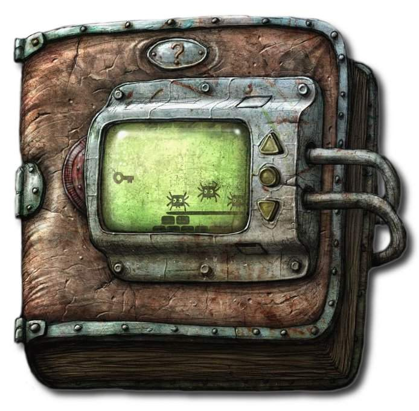

freiesMagazin Februar 2010 (ISSN 1867-7991)
Topthemen dieser Ausgabe
openSUSE 11.2
Die Distribution openSUSE in der Version 11.2 will wieder einmal noch besser, leichter, stabiler und überhaupt das modernste Linux aller Zeiten sein. Der Hersteller selbst verspricht, mit dem neuesten Produkt ein weitgehend universelles System für Desktop-, Netbook- und Serveranwender zu liefern. Dieser Artikel testet die neueste openSUSE-Version in diversen Szenarien. (weiterlesen)
ZFS unter Linux
Das Dateisystem ZFS ist eines der mächtigsten in der Unix-Welt. Es gehört nicht zum Linux-Kernel, aber dennoch kann man es problemlos unter Linux benutzen. Dieser Artikel soll einen kleinen Einblick in das ZFS-Thema geben. Am Beispiel einer Datensammlung und eines Software-RAIDs werden praktische Anleitungen für den Einstieg in dieses besondere Dateisystem gegeben. (weiterlesen)
Machinarium - In der Welt der Maschinen
Mit Samorost und Samorost 2 legte das unabhängige Entwicklerstudio Amanita Design in den letzten Jahren zwei sehr gute und eigenständige Adventures für den Browser vor. Das „Ende“ dieser Entwicklung fand Mitte des letzten Jahres im Spiel Machinarium seinen Höhepunkt, welches in diesem Artikel vorgestellt werden soll. (weiterlesen)
Zum Index
Inhalt
Linux allgemein
openSUSE 11.2
ZFS unter Linux
Der Januar im Kernelrückblick
Anleitungen
Pentaho Data Integration
Software
Machinarium - In der Welt der Maschinen
BackupPC als Backupserver im Heimnetzwerk
Community
Jamendo - Freier Musikdownload
Linux Professional Institute Certification
Das Betriebssystem GNU/Linux
Magazin
Editorial
Leserbriefe
Veranstaltungen
Vorschau
Impressum
Zum Index
Editorial
Freie Software - aber bitte nicht für jeden! Es gibt viele böse Menschen auf dieser Welt. Man muss nur einmal abends um 20 Uhr die Nachrichten einschalten und wird mit Bildern von Betrügern, Piraten (nicht die aus der Partei) und Mördern bedient. Am liebsten würde man die Augen davor schließen bei so viel Elend in der Welt. Die USA ist einer der Vorreiter, was die Verfolgung solcher bösen Menschen angeht, die meistens in sogenannten Schurkenstaaten leben. Oft nimmt die Verfolgung oder die Ausgrenzung solcher bösen Menschen aber ungewöhnliche Züge an. Die Einschränkungen unserer Freiheit erleben wir tagtäglich auch in Deutschland, wo sich die Politiker jeden Monat etwas Neues einfallen lassen, um die Grundrechte zu unterhöhlen. Mit der Vorratsdatenspeicherung [1] hat es angefangen, ging dann weiter zur Internetzensur [2] und landet derzeit bei ELENA [3]. Ob das wirklich gegen die bösen Menschen aus anderen Ländern hilft? Es ist nicht sehr wahrscheinlich, aber mit einem Generalverdacht, dass alle Menschen etwas ausgefressen haben, erwischt man sicherlich auch einmal den Richtigen. Zurück in die USA: Dort geht man mit solchen Schurkenstaaten ähnlich um. Das geht sogar so weit, dass ein in den USA ansässiges Unternehmen nicht jede Art von Software in solche Staaten liefern darf. Getroffen hat es nun einen der größten und bekanntesten Open-Source-Provider: SourceForge [4]. Die Plattform stellt für Menschen weltweit die Infrastruktur zur Verfügung, um Open-Source-Software zu verbreiten und gemeinsam zu entwickeln. Natürlich muss man das „weltweit“ des vorherigen Satzes ab sofort streichen. War es bisher immerhin noch möglich, dass einige Schurken aus den Schurkenstaaten Software von SourceForge herunterladen konnten, um in den Genuss von Freier Software zu kommen, wird dies nun auch dem Großteil der Menschen untersagt. Ob es auf SourceForge eine Anleitung für die Programmierung einer Open-Source-Bombe gibt, ist ungewiss. Auf alle Fälle müssen sich alle Menschen, die in Kuba, Syrien, Iran, Sudan oder Nordkorea leben, nicht wundern, wenn sie nicht mehr auf SourceForge zugreifen können - und mehr als das, die gemeinsame Arbeit über Nationengrenzen hinweg an einer tollen Sache, wie auch immer die konkreten Projekte nun heißen mögen, ist bis auf Weiteres eingestellt. Damit dürfen die bösen Menschen also kein Open-Source mehr entwickeln und nutzen - ja, das trifft sie sicherlich ziemlich hart und kann sie nur zum Aufgeben zwingen [5]. Was bleibt als Quintessenz übrig von dieser Aktion? Um es mit Obelix' Worten zu sagen: „Die spinnen, die Amis!“ Aber um es komplett zu machen: „Die Deutschen, Briten und alle anderen westlichen Länder spinnen genauso.“ Mit der Einschränkung von Freiheiten schadet man zum einen nur der eigenen Bevölkerung und ob auch nur ein böser Hahn in den Schurkenstaaten danach kräht, dass man nicht mehr auf SourceForge zugreifen kann, ist fraglich. Wer dieses Verhalten nicht unterstützen will: Es gibt zahlreiche Projekte im Netz, die Open-Source-Software hosten [6], eines der bekannten deutschen ist berlios.de [7] oder für Ubuntu-Nutzer das bekannte Launchpad [8]. Um das Ganze aber etwas zu relativieren: SourceForge hält sich nur an die Gesetze, die in den USA leider herrschen.Proprietäres im Blick?
Dass Open Source nicht alles ist, meinte auch Canonical, als das Unternehmen kurzerhand eine Umfrage startete [9], in der man wissen will, welche proprietären Programme die Nutzer sich in Ubuntu wünschen. Die Aufforderung im offiziellen Ubuntu Forum [10] ist sehr kurz und erklärt nicht genau die Umsetzung der Wünsche. Vorgeschlagene Programme wie Skype gibt es bereits als Linux-Version, eine Paketerstellung wäre daher kein Problem. Eine native Unterstützung von World of Warcraft geht aber wahrscheinlich weit über die Möglichkeiten von Canonical hinaus. Es ist daher davon auszugehen, dass bei den meisten Programmen nur eine bessere Wine-Unterstützung gemeint ist. Im Forum entbrennt dagegen die Diskussion ob der Sinnhaftigkeit dieser Umfrage. Zum einen wünschen sich wenige Nutzer proprietäre Programme und kennen auch einen Großteil der vorgeschlagenen gar nicht. Daneben ist man eher an mehr Stabilität und Fehlerbereinigungen in Ubuntu interessiert als an neuer Software. Natürlich gibt es aber auch Befürworter, denen einige nur für Windows verfügbare Programme unter Linux fehlen. Auch ist unklar, wie lang die Umfrage laufen wird und damit auch, wann und ob Ergebnisse veröffentlicht werden. Man kann aber gespannt sein, ob die Ubuntu-Nutzer Interesse an mehr proprietären Programme haben. Von einigen wird die Antwortmöglichkeit „Don't ever want to see this app on Ubuntu“ sicherlich auch hinreichend genutzt.Kommentieren noch leichter gemacht
Natürlich freuen wir uns, wenn Sie zu den oben aufgeführten Themen und den Artikeln in freiesMagazin Stellung nehmen und uns sagen, was Sie denken. Damit das in Zukunft noch besser klappt, haben wir die Kommentarfunktion für einzelne Artikel verbessert. Während es seit geraumer Zeit unter jedem Artikel einen Link gibt, um den Artikel (bzw. das Editorial oder die Leserbriefe) zu kommentieren, bestand bis jetzt das Problem, dass es oft wegen mangelnden oder nicht aussagekräftigen Kommentartiteln nicht möglich war, Kommentare den jeweiligen Artikeln zuzuordnen, was nicht selten zu Verwirrung führte. Dieses Problem sind wir nun mit einer Drupal-Erweiterung angegangen, welche es uns ermöglicht, passende Titel vorzugeben, welche natürlich vom Leser geändert werden können, jedoch eine gute Vorgabe darstellen. Damit sollte ab sofort Klarheit herrschen, was kommentiert wird, und Sie, liebe Leser, müssen dazu noch weniger tippen. :) Wir wünschen Ihnen nun viel Spaß mit der neuen, prall gefüllten Ausgabe Ihre freiesMagazin-Redaktion Links- http://www.vorratsdatenspeicherung.de/
- http://www.heise.de/ct/artikel/Verschleierungstaktik-291986.html
- http://wiki.piratenpartei.de/ELENA-Verfahren
- http://sourceforge.net/blog/clarifying-sourceforgenets-denial-of-site-access-for-certain-persons-in-accordance-with-us-law/
- http://gulli.com/news/sourceforge-sperrt-bestimmte-l-nder-aus-2010-01-26
- http://en.wikipedia.org/wiki/Comparison_of_open_source_software_hosting_facilities
- http://www.berlios.de/
- http://www.launchpad.net/
- http://www.surveymonkey.com/s/GFVQP62
- http://ubuntuforums.org/showthread.php?t=1381221
Zum Index
openSUSE 11.2
von Mirko Lindner Die Distribution openSUSE in der Version 11.2 will wieder einmal noch besser, leichter, stabiler und überhaupt das modernste Linux aller Zeiten sein. Der Hersteller selbst verspricht, mit dem neuesten Produkt ein weitgehend universelles System für Desktop-, Netbook- und Serveranwender zu liefern. Dieser Artikel testet die neueste openSUSE-Version in diversen Szenarien. Redaktioneller Hinweis: Der Artikel „openSUSE 11.2“ erschien erstmals bei Pro-Linux [1] und wird mit freundlicher Genehmigung des Autors unter der GNU Free Documentation License [2] veröffentlicht.Lieferumfang
Der Lieferumfang der Boxversion schrumpfte in der neuesten Ausgabe von openSUSE auf ein Mindestmaß. So beinhaltet die Box neben dem eigentlichen Installationsmedium für 32- und 64-Bit-Systeme und einer CD mit proprietären Anwendungen lediglich ein knapp 190 Seiten umfassendes Handbuch und diverse Werbematerialien. Vorbei scheinen die Zeiten zu sein, als der Hersteller ein vorbildliches Handbuch mit Maximalumfang lieferte. Nur die wichtigsten Schritte der Installation fasst das Werk noch zusammen. Weitere Dokumentation oder gar hilfreiche Tutorials sucht man in der gedruckten Dokumentation vergebens. Hinzu kommt bei der Box-Version noch ein 90-tägiger Telefon- und E-Mail-Support bei der Installation und der Konfiguration. Anwender, die sich für eine Downloadversion [3] entscheiden, stehen da schon vor einer größeren Auswahl. Zur Installation stehen DVD-Medien für 32- und 64-Bit-Systeme zur Verfügung. Darüber hinaus gibt es auf der Software-Seite des Projektes noch Live-CD-Versionen mit GNOME oder wahlweise KDE zum Download, die sich ebenso von einem USB-Stick starten lassen, und eine Netzwerk-CD, die die zu installierenden Pakete direkt von den openSUSE-Servern lädt. Wie in der Boxversion bietet das Projekt auch eine CD mit proprietären Produkten an. Verfügbar ist auch eine CD mit vielen weiteren Sprachen. In puncto Softwareumfang liefert Novell auch mit openSUSE 11.2 einen gewohnt großen Umfang an Paketen. Die Distribution setzt auf dem Kernel 2.6.31 und dem Dateisystem Ext4 auf. Darüber hinaus enthält das Produkt unter anderem die Desktopumgebungen KDE 4.3 und GNOME 2.28 sowie OpenOffice.org 3.1 und Firefox 3.5.4. KDE ist als Standarddesktop der Distribution voreingestellt. Eine Besonderheit der SUSE - Veröffentlichungen stellte in der Vergangenheit die Integration kommerzieller Applikationen in das Basis-System dar. Wer glaubt, durch den Kauf der Boxvariante andere kommerzielle Beigaben zu erhalten, irrt. Die Box enthält die selbe Auswahl von Programmpaketen wie die Downloadversion. So enthält die DVD wie schon in der Vorgängerversion nur noch freie Software. Anwender, die auch proprietäre Zugaben wünschen, müssen diese entweder von einem separaten, mitgelieferten Medium oder direkt aus einem Online-Verzeichnis installieren.Installation von openSUSE 11.2.
Installation von openSUSE 11.2
Das Booten beziehungsweise die Installation der mitgelieferten DVD klappte bei drei Systemen nicht. Während bei einem 64-Bit-System zwar die eigentliche Installation problemlos funktionierte, stürzte YaST bei der manuellen Konfiguration mit einem Zugriffsfehler ab. Auf einem zweiten System stürzte der Installer bereits beim Aufruf ab. Auf einem der 32-Bit-Systeme verabschiedete sich das Programm dagegen mit einem Error 11 im i386-Loader. Das Booten der DVD klappte hier nur mit speziellen Boot-Optionen. Anzumerken ist, dass noch unter openSUSE 11.1 keines der Systeme irgendwelche Probleme bereitete (siehe „openSUSE 11.1“, freiesMagazin 03/2009 [4]). Funktionell gesehen unterlag die Auswahl der möglichen Installationsmethoden keinerlei Änderung. So bietet openSUSE immer noch eine automatische Installation wahlweise mit deaktiviertem ACPI oder in einer sicheren Umgebung, eine manuelle Installation, Rettungssystem oder Speicher- und Firmwaretest zur Auswahl an. Darüber hinaus lassen sich bereits beim ersten Booten der DVD die Sprache und die zu verwendende Auflösung bestimmen. Fast schon obligatorisch änderte der Hersteller auch in der neuen Version das Aussehen des Bootscreens. Das Grüne musste nun einem durchaus ansprechenden dunkelgrün-grauen Ton weichen. Resultierend aus der bereits bei openSUSE 11.1 getroffenen Entscheidung der Pakettrennung [5], muss auch in der neuesten openSUSE-Version bei der Installation nicht mehr explizit eine Lizenz akzeptiert werden. Neu in openSUSE 11.2 - und wohl auch als richtungsweisend zu betrachten - ist allerdings die Festlegung auf einen Standarddesktop. Mit der Übernahme des Nürnberger Distributors Suse Linux AG durch Novell endete eine mehrere Jahre andauernde Ära der Vorherrschaft von KDE auf dem Suse-Desktop. Die traditionell KDE-freundliche Distribution wurde fortan zunehmend neutraler und schlussendlich von der Vorgabe eines Standarddesktops befreit. Fortan listete der Hersteller bei der Installation die zwei größten Umgebungen, GNOME und KDE, in der alphabetischen Reihenfolge auf und präferierte, offiziell zumindest, keine Umgebung mehr. Damit unterschied sich Novell allerdings von den meisten Distributoren, die oftmals beide Umgebungen anbieten, allerdings eine als Standarddesktop wählen. Mit openSUSE 11.2 kehrt die Distribution nun zu ihren Wurzeln zurück und wählt KDE als Standard [6]. Zwar sind die Desktops immer noch alphabetisch in der Auflistung sortiert, KDE wurde aber bereits vorausgewählt. Laut früheren Aussagen von openSUSE-Produktmanager Michael Löffler wird GNOME allerdings weiterhin voll und ganz unterstützt. Dies bekräftigt der Hersteller auch bei der Beschreibung der Desktops und informiert, dass beide einfach zu konfigurieren seien und von openSUSE gleichwertig unterstützt werden. „Jede Desktopumgebung hat einen eigenen Stil, Ihr persönlicher Geschmack entscheidet also, welche für Sie die passende ist“, schreibt der Distributor. Mit der aktuellen Version verabschiedet sich openSUSE nun auch wie angekündigt von KDE3 und liefert die Umgebung nicht mehr vollständig aus.Konfiguration der Installation
Bereits beim ersten Blick fallen bei den Installationsmasken zwischen dem Menü und dem eigentlichen Installationsbereich drei kleine Punkte auf. Damit lässt sich nun endlich bei der Konfiguration das teilweise störende Menü abschalten. Vorbei sind die Zeiten, in denen bei manchen Auflösungen ein Drittel des Bildschirms für das Menü verbraucht und die eigentliche Konfiguration unnötig zusammengestaucht wurde.Auswahl des Standarddesktops.
Das Partitionierungswerkzeug von YaST wurde, nachdem es der Hersteller bereits in der letzten Version massiv überarbeitete, nur geringfügig geändert. So erlaubt das Programm unter anderem in der Vorschlagmaske, die Volume-Gruppen zu verschlüsseln. Darüber hinaus hat Novell für openSUSE nun Ext4 als Standarddateisystem voreingestellt. Mitgeliefert, wenn auch nicht offiziell unterstützt, wird auch Brtfs. Erfreulich ist, dass das neue Programm dem Anwender nun die Möglichkeit gibt, die Bootpartition frei zu wählen. Ferner ermöglicht die Konfiguration des Bootloaders die Aktivierung von SELinux, das nun offiziell von Novell in der neuesten openSUSE-Version mitgeliefert wird. Eine weitere Neuerung erleichtert dem Anwender die Auswahl der VGA-Modi. Unschön verhält sich openSUSE allerdings bei der Installation auf einem System, auf dem bereits eine Linux-Distribution eingerichtet und von openSUSE überschrieben wurde. In diesem Fall behielt der Installer in der Standardeinstellung den alten GRUB-Eintrag und hinterließ damit ein nicht startendes System. Erst eine manuelle Korrektur der GRUB-Konfiguration brachte Hilfe. Zu den weiteren Veränderungen der aktuellen openSUSE-Distribution gehört eine geänderte Softwareauswahl. Die teilweise ziemlich unübersichtliche Maske wurde komplett geändert. Zwar ist die Anzeigenauswahl mittels eines Pop-Down-Menüs immer noch geblieben, doch lässt sich dieses nun abklemmen und das Programm öffnet bei jeder Konfiguration einen neuen Reiter. Neu hinzugekommen ist nun auch die Anzeige der Pakete anhand der RPM-Gruppen. Einen Fauxpas leistete sich Novell allerdings auch hier. Der ehemals komplett ins Deutsche übersetzte Bereich ist nun gänzlich in Englisch gehalten. Nicht nur die Beschreibungen der Bereiche, sondern selbst die Titel erscheinen nun plötzlich in englischer Sprache.
Softwareausstattung
Die Softwareausstattung ist openSUSE-typisch üppig ausgefallen. Erweitert man noch die Quellen um die allseits bekannten Alternativrepositorys, so gibt es kaum eine Applikation, die nicht für openSUSE angeboten wird. Hier hat openSUSE sicherlich neue Standards gesetzt. Während bei anderen Produkten beispielsweise Gemeinschaftsrepositorys noch manuell eingetragen werden müssen, listet openSUSE bereits von Hause aus die wichtigsten Quellen auf. Hinzu kommt noch das eigene Build-System [7], das von vielen Applikationen die neuesten Versionen anbietet.Veränderte Softwareinstallation.
openSUSE hat die von der Gemeinschaft beigetragenen Repositorys sicherlich nicht erfunden. Aber die mittlerweile veröffentlichten Werkzeuge und Systeme scheinen interessierte Entwickler anzuspornen, jedes noch so eine kleine Programm in der neuesten Version anzubieten. Stellvertretend sei hier der Samba-Server genannt, welcher nur wenige Stunden nach der Freigabe einer ersten Testversion von 3.5.0 bereits im Softwareverzeichnis des Distributors zu finden war. Um den Zugriff auf die Software zu erleichtern, fügte Novell der Distribution eine Erweiterung von YaST unter dem Namen „webpin“ hinzu. Die Komponente ermöglicht es Anwendern, direkt den „openSUSE Build Service“ zu durchsuchen, ohne dass sie die Weboberfläche bemühen müssen. Die Benutzung der Anwendung gestaltet sich allerdings noch ein wenig holprig und lässt eine feinere Suche genauso vermissen wie eine einfache Sortierung. Hier sollte der Hersteller noch ein wenig nachbessern und nicht nur die fehlenden Funktionen, sondern auch die Bedienung überarbeiten. Trägt man beispielsweise in das Suchfenster einen Begriff ein und betätigt die „Enter“-Taste, so sucht das Programm nicht nach Paketen, sondern startet eine Installation.
openSUSE glänzt unter anderem durch eine einfache Installation.
Multimedia
Mit der Freigabe von openSUSE 11.2 läutet der Distributor ein neues Zeitalter ein, in dem das Produkt wieder ohne eine vollwertige Wiedergabe von MP3-Dateien daher kommt. Nach einem Streit mit Fluendo entfernte openSUSE das proprietäre, aber kostenlose GStreamer-MP3-Plug-in [8]. Wie der spanische Hersteller gegenüber Pro-Linux sagte, stellte der Grund für den Streit die Tatsache dar, dass Novell zwar die MP3-Lösung des Herstellers nutzte, sich bei der Lizenzierung von anderen Codecs aber an einen Konkurrenten wandte. Fluendo untersagte daraufhin den Nürnbergern die Nutzung seines Produkts in der Standarddistribution. Ein ähnliches Bild ergibt sich beim Versuch, diverse Multimediacodecs abzuspielen, und bei der DVD-Wiedergabe von CSS-geschützten Videos. Auch hier versagt das neueste Produkt. Der Fairness halber sei allerdings erwähnt, dass dies nicht an openSUSE liegt, sondern an lizenzrechtlichen Gründen. Wer allerdings ein wenig sucht, kann die benötigten Pakete wie immer schnell im Internet finden. Das selbe gilt auch für typische Windows-Formate wie WMV. Auch hier müssen die entsprechenden Dateien in Eigenregie aus dem Netz geladen und installiert werden [9]. Novell könnte sich allerdings Gedanken machen, wenigstens der Boxversion einen lizenzierten Videoplayer beizulegen. Geht man von der Tatsache aus, dass die Boxversion oftmals von Anwendern gekauft wird, die erstmals mit Linux in Berührung kommen, wäre es nicht nur eine nette Geste, sondern auch vor allem für Neulinge eine Erleichterung, eine leichtere Wiedergabe von MP3 und DVD anzubieten. Entsprechende kommerzielle Lösungen gibt es mittlerweile zur Genüge.KDE
Der neue Standarddesktop unter openSUSE heißt KDE. Die in der Version 4.3.1 vorliegende Umgebung wurde visuell an das neue Aussehen angepasst und kommt mit den wichtigsten Applikationen daher. So gehört neben Amarok 2.1.1 und K3b 1.68.0 auch KOffice in der Version 2.0.2 zum Lieferumfang.Der Standard-Desktop von openSUSE 11.2: KDE 4.3.1.
Der Firefox-Browser, der auch unter KDE zum Standardbrowser auserkoren wurde, weist neben den üblichen Plug-ins für Flash und Java auch die openSUSE-Extentions in der Version 1.0 auf [10]. Konkret handelt es sich bei der Erweiterung um eine Adaption von Ubuntus Ubufox [11]. Die Integration der restlichen Plug-Ins kann allerdings durchaus noch verbessert werden. Während Flash, Java und Paketdateien anstandslos im Browser erkannt und wiedergegeben wurden, versagte auch hier die Wiedergabe von Video- oder Audio-Dateien. Erst die Installation geeigneter Pakete aus einschlägigen Quellen ermöglichte auch unter Firefox die Standardfunktionalität. Hier wäre sicherlich wünschenswert, dass Novell in den kommenden Versionen von openSUSE nachbessert und dem Anwender wenigstens den Grund für die fehlende Unterstützung erklärt. Abgesehen von dem Plug-in-Manko verhielt sich Firefox in der KDE-Umgebung weitgehend souverän und fühlte sich wie eine native Anwendung an, die beispielsweise den Dateidialog von KDE benutzt. Als Icon-Theme wählten die Nürnberger das Oxygen-Theme, was dem Anwender das Gefühl vermittelte, mit einer KDE-Anwendung zu arbeiten. Ferner nutzt der Browser auch KDE-Applikationen für die Anzeige von Dokumenten, wie beispielsweise PDF-Dateien. Die Einbindung ist durchaus gelungen. Während manche Distributionen lediglich Firefox installieren, merkt man in der aktuellen openSUSE, dass das Team sich auch sichtlich bemühte, die Integration so gut wie nur möglich durchzuführen. Das hat allerdings auch einen Preis: Standardmäßig ist die Option, die Firefox nutzt, um neue Updates zu finden, deaktiviert.
Das Plasmoid-Menü Lancelot ist ebenfalls dabei.
Während bei der täglichen Arbeit mit KDE 4.3.1 wenig Probleme festgestellt wurden und die Umgebung sich durchaus stabil verhielt, fiel bei der Konfiguration von Plasma-Komponenten eine häufige Instabilität auf. So stürzte Plasma beispielsweise mehrmals beim Hinzufügen eines Widgets ab. Das Hinzufügen eines Spacers im Panel führte nicht selten zu unerwarteten Resultaten, wie verschobenen Widgets und fehlenden Skalierungspfeilen. Unangenehm fiel auch Akregator mit diversen Fehlern und Unstimmigkeiten auf. Wer über eine entsprechende Hardware verfügt, wird unter KDE mit diversen Compositing-Plug-Ins verwöhnt. Standardmäßig aktivierte der Distributor allerdings nur wenige Effekte, sodass Anwender, die auf explodierende oder wabbelnde Fenster, sich drehende Desktops oder weitere grafische Spielereien Wert legen, die weitere Funktionalität im Kontrollzentrum von KDE einschalten müssen. Strigi und Nepomuk sind in der Standardausführung von openSUSE deaktiviert, was wohl mit dem Wunsch zu erklären ist, in der Standardkonfiguration weniger Ressourcen zu verbrauchen.
GNOME
Die in der Version 2.28.0 verfügbare GNOME-Umgebung fällt zuallererst durch eine durchaus gelungene grafische Änderung auf. Der Desktop der aktuellen openSUSE wurde in dunklen Farben gehalten und wirkt sehr edel. Das bereits seit etlichen Versionen von openSUSE eingeführte Menü wurde weiterhin beibehalten. Während Novell bei KDE die Desktopsuche abschaltete, läuft unter GNOME im Hintergrund GNOME Do [12]. Mittels der Tastenkombination „Super“ + „Leertaste“ („Super“ = „Windows“-Taste) lässt sich die Applikation aufrufen und das System nach den gewünschten Informationen durchsuchen. Ein Manko des Programms stellt allerdings seine Verborgenheit dar. Sucht man nicht explizit in der Prozessliste, findet man es weder in der Task- noch in einer anderen Leiste.GNOME unter openSUSE 11.2 mit GNOME Do.
Unangenehm fallen unter GNOME KDE- und Qt-Applikationen auf. Während GTK+-Anwendungen unter KDE ein ähnliches Aussehen haben, unternahm der Distributor bei GNOME nicht einmal den Versuch, sie anzupassen. Gestartete Qt-Anwendungen fühlen sich nicht nur wie Fremdkörper an, die nicht in die Umgebung passen, sondern sehen auch so aus. Denn während GNOME-Anwendungen beispielsweise ein dunkles Menü haben, kommen KDE-Anwendungen mit einem hellen Thema daher. Erschwerend kommt noch hinzu, dass manche Abhängigkeiten von KDE-Applikationen nicht korrekt angegeben wurden. Installiert man beispielsweise Amarok in der Standardumgebung unter GNOME, so fehlt der Applikation gleich eine Latte von Bibliotheken.
Xfce
Für manche gelten GNOME oder KDE als zu bunt, überladen oder zu langsam. openSUSE 11.2 bietet auch in dieser Version neben GNOME und KDE bereits bei der Installation eine dritte Umgebung zur Auswahl an. Genauso wie die zwei anderen Desktop-Umgebungen präsentiert sich auch XFCE 4.6.1 aufgeräumt und an die Distribution angepasst. Leider ist das schon die einzige Gemeinsamkeit, denn eine Vorkonfiguration wie unter KDE oder GNOME fand hier nicht statt. So enthält das Menü beispielsweise keine sinnvolle Vorkonfiguration für YaST-Module, wie sie in den beiden anderen Umgebungen zu finden sind. Kenner der Xfce-Umgebung wird es sicherlich nur wenig stören.XFCE in der Standardeinstellung.
Server
Neben der Möglichkeit, openSUSE auf einem Desktop zu betreiben, ermöglicht die Distribution auch die Installation als Server. Ob es angesichts des mittlerweile von ehemals 24 auf nur noch 18 Monate geschrumpften Supportzeitraums sinnvoll ist, einen Unternehmensserver auf der Basis von openSUSE aufzusetzen, sei dahingestellt und jedem selber überlassen. Die Möglichkeit ist gegeben und Novell liefert alle Server-Softwarepakete in relativ neuen Versionen. Fast alle Server, die openSUSE 11.2 mit sich bringt, sind entweder vorkonfiguriert oder werden mit einer prinzipiell funktionsfähigen Installation geliefert. Besonders erfreulich für passionierte Heimnutzer und angehende Administratoren dürften die vielen Helfer in YaST sein. So hat der Hersteller im Lieferumfang des Paketes YaST-Module für die Einrichtung eines DHCP-, DNS-, FTP-, HTTP-, Kerberos-, LDAP-, NFS-, Proxy-, Samba-, SLP-, SSHD- und TFTP-Servers. Während manche Module nur minimale Einstellungen ermöglichen, erlauben andere wiederum eine durchaus gelungene Konfiguration. Die Standardkonfiguration der Server kann allerdings nicht immer überzeugen. So war beispielsweise die Vorabeinstellung bei einem 64-Bit-System keinesfalls für den Betrieb eines MySQL-Servers geeignet. Auf einem Ext4-Dateisystem und ohne nachträgliche Konfiguration lief die Datenbank um das knapp 50-fache langsamer als auf einer Konkurrenzdistribution, die für den Einsatz auf Servern konzipiert wurde. So dauerte plötzlich eine simple Abfrage, die sonst nicht einmal eine Sekunde dauerte, knapp 30 Sekunden. Erst die Änderung des Dateisystems auf Ext3 und eine manuelle Anpassung brachte zufriedenstellende Ergebnisse.YaST
Das zentrale Werkzeug für alle möglichen Einstellungen ist immer noch YaST. Egal, ob es um die Installation von Software geht, die Einrichtung von Hardware oder die Benutzerverwaltung, an YaST führt kein Weg vorbei. Das Programm wurde gegenüber der letzten Version in der Qt-Variante unter KDE weiter ausgebaut und nicht nur grafisch verändert. Vom Aufbau her ähnelt nun die Qt-Variante der GTK+-Version von openSUSE 11.1. So finden sich die verschiedenen Teilwerkzeuge in einem einzelnen Fenster, das mittels einer bequem zu erreichenden Suche nach bestimmten Suchwörtern sortiert werden kann.YaST in der Qt-Variante.
Während die eingangs schon erwähnte Webpin-Komponente neu in YaST hinzugekommen ist, wurden die Grafik- und Tastatur-Komponenten entfernt. Der Hersteller erklärt diesen Schritt mit der Tatsache, dass die Konfiguration weitgehend automatisch durchgeführt wird und darüber hinaus die Desktopumgebungen bereits ähnliche Einstellungen anbieten. Die GTK+-Variante von YaST wirkt dagegen auf den ersten Blick unverändert. Doch auch hier änderte der Hersteller einiges. Unter anderem lässt sich bei der Installation die Auswahl nach Sprachen sortieren. Das Netzwerkprogramm gibt nun dem Anwender die Möglichkeit, bei einer DHCP-Verbindung eine spezifische Protokollversion zu wählen. Die in das GNOME-Kontrollzentrum eingebundenen Programme fügen sich mittlerweile nahtlos in die Umgebung ein.
Nicht in openSUSE 11.2 enthalten, aber leicht nachrüstbar: die GNOME Shell.
Fazit
Wer nicht wirklich auf einen Installationssuport angewiesen ist und die Download-Variante von openSUSE herunterladen kann, kann sich den Kauf der Box getrost sparen. Das Produkt bietet gegenüber der Onlineversion so gut wie gar keinen Mehrwert, denn das gedruckte Handbuch rechtfertigt keinesfalls den Kauf eines mit 60 € zu Buche schlagenden Produktes. Hier wäre es schön, wenn der Hersteller dem Käufer wenigstens einen lizenzierten Videoplayer anbieten und damit einen der wohl größten Kritikpunkte von Windows-Umsteigern beseitigen würde. Der allgemeine Eindruck, den openSUSE hinterlässt, fällt durchaus positiv aus. Wären da nur nicht die vielen kleinen Unzulänglichkeiten, könnte openSUSE 11.2 zum Klassiker werden. Das Produkt weist in der aktuellen Version zwar keine wirklich großen Probleme auf, doch vor allem die kleineren Problemchen sind es, die massiv nerven. Selten wies eine SUSE- oder eine openSUSE-Distribution so viele kleine störenden Fehler auf und verlangte so viele manuelle Eingriffe nach oder während der Installation. Wer sich allerdings die Mühe macht und das System ausbessert, wird mit einem durchaus gelungenen System belohnt, das mit einer schier unerschöpflichen Anzahl an Paketen, einer gelungenen Hardwareerkennung und einem durchdacht eingestellten Desktop aufwartet. openSUSE 11.2 ist und bleibt weiterhin eine sehr gute Einsteigerlösung. Das System kann problemlos auch von Windows-Umsteigern genutzt werden. Auch dank YaST stellt die Konfiguration der meisten Komponenten keine wirkliche Hürde für Anwender dar, die über ein Durchschnittsmaß an Systemkenntnis verfügen. Die freie Verfügbarkeit von openSUSE ermöglicht zudem einen einfachen Test. Links- http://www.pro-linux.de/NB3/artikel/2/404/opensuse-112.html
- http://www.gnu.org/copyleft/fdl.html
- http://software.opensuse.org/112/de
- http://www.freiesmagazin.de/freiesMagazin-2009-03
- http://www.pro-linux.de/NB3/news/1/13511/opensuse-111-ohne-proprietaere-software.html
- http://www.pro-linux.de/NB3/news/1/14604/opensuse-waehlt-kde-zum-standarddesktop.html
- http://software.opensuse.org/search
- http://www.pro-linux.de/NB3/news/1/14136/opensuse-entfernt-mp3-plugin.html
- http://opensuse-community.org/Restricted_Formats/11.2
- http://en.opensuse.org/Mozilla/susefox
- https://code.launchpad.net/ubufox
- http://do.davebsd.com/
| Autoreninformation |
| Mirko Lindner befasst sich seit 1990 mit Unix. Seit 1998 ist er aktiv in die Entwicklung des Kernels eingebunden und verantwortlich für diverse Treiber und Subsysteme für Linux und andere freie Plattformen. Daneben ist er einer der Betreiber von Pro-Linux.de. |
Zum Index
ZFS unter Linux
von Martin Böcher Das Dateisystem ZFS [1] ist eines der mächtigsten in der Unix-Welt. Es gehört nicht zum Linux-Kernel, aber dennoch kann man es problemlos unter Linux benutzen. Dieser Artikel soll einen kleinen Einblick in das ZFS-Thema geben. Am Beispiel einer Datensammlung und eines Software-RAIDs werden praktische Anleitungen für den Einstieg in dieses besondere Dateisystem gegeben.Einleitung
Es gibt viele Dateisysteme für Linux und andere Betriebssysteme. Meist werden sie mit einem speziellen Ziel entwickelt, z. B. besonders groß oder schnell zu sein. Unter Linux ist derzeit Ext3 am verbreitetsten, wobei der Nachfolger Ext4 bereits seinen Weg in den Linux-Kernel gefunden hat (siehe „Das Dateisystem Ext4“ [2]). Wenn es um sehr große Datenmengen geht, wird auch schon mal ein neues Dateisystem entwickelt, z. B. um die Unmengen von Bildern bei Facebook zu lagern [3]. In diesem Artikel soll es aber um ein Allzweck-Dateisystem gehen, das nicht nur mit 248 Dateien, die bis zu 16 EiB (= 16·260 Byte) groß sein dürfen, zurecht kommt, sondern auch gleich diverse RAID-Level mit sich bringt. Man kann Festplatten zu einem Pool hinzufügen, wieder entfernen, Unmengen an Dateien anlegen, Backups blitzschnell mit Snapshots erstellen, Bereiche komprimieren und noch sehr viel mehr: Willkommen in der zettabyte-großen Welt von ZFS [4].Der Ursprung
Das ZFS-Dateisystem wurde von Sun Microsystems [5] für Solaris 10 entwickelt. Ursprünglich stand ZFS für Zettabyte File System, heute ist der Name ein Pseudo-Akronym [6]. ZFS steht unter der CCD-Lizenz (CCDL) [7], was den Einsatz unter OpenSolaris [8] ermöglichte. Mittlerweile gibt es ZFS nicht nur für Solaris und OpenSolaris, sondern auch für FreeBSD [9], Mac OS X und dank FUSE auch für Linux.Mit Googles Hilfe
Im Jahr 2006 hat Ricardo Correia das Projekt, ZFS mittels FUSE-Framework [10] zu Linux zu portieren, gestartet. Dies geschah im Rahmen des Google Summer of Code (siehe „Google Summer of Code“, freiesMagazin 12/2009 [11]). Daraufhin entstanden auch das zum Projekt gehörige Wiki [12] und sein zfs-on-linux-Blog [13]. Beide sind leider nicht mehr aktuell und Ricardo Correia hat sich aus dem Projekt zurückgezogen. Es wird aber auf einer neuen Seite [14] weiter gepflegt und weiterentwickelt. Aktuell ist hier die Version 0.6.0 Beta. Über die Mailingliste [15] findet man weitere Informationen sowie Kontakt zu anderen Benutzern und den Entwicklern.ZFS und FUSE installieren
Um ZFS unter Linux zu benutzen, wird weitere Software benötigt. ZFS gehört nicht zum Linux-Kernel und bisher auch zu keiner Standardinstallation. Mit dem Paketmanager installiert man ZFS, wobei die Pakete je nach Distribution unterschiedlich benannt sind. Die beschriebenen Tests wurden mit Gentoo Linux [16] durchgeführt, bei dem das Paket zfs-fuse (sys-fs/zfs-fuse) genannt wird und in der Version 0.5.0 im portage tree (der offiziellen Gentoo-Paketsammlung) zu finden ist. Hilfen und hilfreiche Links zu Paketen von anderen Distributionen wie Debian und auch Quellcode findet man im WizyWiki [17] bzw. auf der neuen Projektseite [18]. Im Wiki von Ubuntu gibt es auch einen detaillierten Beitrag [19] über die Installation und die Anwendung von ZFS. Zusätzlich werden weitere Pakete über Abhängigkeiten benötigt und installiert (scons, fuse, ggf. weitere Pakete). Das mitinstallierte FUSE (Filesystem in Userspace) ermöglicht überhaupt erst, ein Dateisystem im Userspace zu benutzen. Auf den Webseiten von FUSE [20] findet man auch eine gute Grafik, die den Zusammenhang zwischen Kernel und FUSE verdeutlicht, denn ansonsten werden Dateisysteme vom Kernel und seinen Modulen zur Verfügung gestellt.ZFS starten
Um ZFS zu nutzen, müssen die Dienste für FUSE und ZFS erst einmal gestartet werden. Hierzu wird wiederum ein Kernelmodul benötigt. Um das Kernelmodul zu laden, nutzt man den Befehl modprobe:
# modprobe fuse |
# /etc/init.d/fuse start # /etc/init.d/zfs-fuse start |
Zwei Befehle und alles gehorcht!
Im Grunde gibt es für ZFS nur zwei Befehle: zpool und zfs. Mit zpool schafft man die Grundlagen wie den Pool (ein Zusammenschluss von Festplatten) und das RAID-Level (Grad der redundanten Anordnung unabhängiger Festplatten). Mit dem Befehl zfs konfiguriert man dann die einzelnen Einstellungen, wie z. B. den Einhängepunkt oder die Komprimierung bis ins Detail. Um die beiden Befehle besser kennen zu lernen, sollte man deren Hilfe in Form der Manpages lesen. Da ZFS nicht in allen Distributionen eingepflegt ist, kann man den Befehl am einfachsten ohne Argument aufrufen, also:
# zpool |
# zfs |
Ab in den Pool
Ein Pool im ZFS kann man mit Virtual Volumes von LVM (siehe „Der Logical Volume Manager“, freiesMagazin 03/2009 [23]) vergleichen, nur bietet ZFS die Möglichkeit, mehrere dieser Volumes in einem Pool zu vereinen. Gut veranschaulicht wird dies in der Präsentation „The Last Word in Filesystems“ von James C. McPherson [24]. Dort werden auch verschiedene RAID-Level und andere Zusammenhänge in Verbindung mit Festplatten und Dateisystemen verdeutlicht. Der Pool, der aus einer oder mehreren Festplatten (oder auch USB-Sticks) bestehen kann, wird bei ZFS meist „tank“ genannt, so auch hier in den Beispielen.Die Befehle zpool und zfs
Zum Kennenlernen folgt hier eine kurz Liste, was man mit den neuen Befehlen zpool und zfs erreichen kann [25].zpool
Um die bestehenden Pools aufzulisten, benutzt man folgenden Befehl:
# zpool list |
# zpool create tank /dev/sdb |
# zpool destroy tank |
# zpool create tank mirror /dev/sdb /dev/sdc |
# zpool scrub tank |
# zpool get all tank |
# zpool status |
# zpool add tank /dev/sdd |
# zpool remove tank /dev/sdd |
# zpool replace tank /dev/sdb /dev/sdd |
# zpool export tank |
# zpool import tank |
zfs
Um ein Dateisystem anzulegen (tank ist der Name des Pools, files der Name des Dateisystems) reicht der Befehl
# zfs create tank/files |
# zfs set mountpoint=/home/linus/storage tank/files |
# zfs create tank/files/linus # zfs create tank/files/martin # zfs create tank/files/frank # zfs create tank/files/jan |
# zfs get all tank |
# zfs get all tank/files |
# zfs set compression=on tank/files |
# zfs set quota=15g tank/files/linus |
# zfs set reservation=10g tank/files/frank |
Beispiele aus dem Alltag
Um die ganze Prozedur etwas zu veranschaulichen, gibt es hier zwei Beispielszenarien. Das erste Szenario ist eine Datensammlung, die nicht sonderlich ausfallsicher sein muss, sondern nur viel Speicherplatz zur Verfügung stellen soll. Das zweite Szenario soll ein sicheres RAID sein. Hier soll eine defekte Festplatte getauscht werden.Szenario 1: Die Datensammlung
Um den Pool tank zu erstellen, gibt man folgenden Befehl ein:
# zpool create tank /dev/sdb |
# zpool add tank /dev/sdc |
# zpool status tank pool: tank state: ONLINE scrub: none requested config: NAME STATE READ WRITE CKSUM tank ONLINE 0 0 0 sdb ONLINE 0 0 0 sdc ONLINE 0 0 0 errors: No known data errors |
Szenario 2: Das sichere RAID
Die Daten sollen auf einem RAID-5 (siehe unten) Platz finden. Hierzu wird ein Pool mit vier Festplatten erstellt:
# zpool create tank raidz1 /dev/sdb /dev/sdc /dev/sdd /dev/sde |
# zpool create tank raidz1 /dev/sdb /dev/sdc /dev/sdd /dev/sde spare /dev/sdf |
# zpool status tank pool: tank state: ONLINE scrub: none requested config: NAME STATE READ WRITE CKSUM tank ONLINE 0 0 0 raidz1 ONLINE 0 0 0 sdb ONLINE 0 0 0 sdc ONLINE 0 0 0 sdd ONLINE 0 0 0 sde ONLINE 0 0 0 spares sdf AVAIL errors: No known data errors |
# zpool replace tank /dev/sdb /dev/sdg |
Sicher ist sicher
Bei der Datensicherheit muss man verschiedene Aspekte beachten: Ausfallsicherheit, Zugriffssicherheit, Datenschutz und weitere Sicherheitspunkte. An dieser Stelle soll es einen kleinen Einblick in zwei Bereiche geben, die eine gewisse Grundlage bilden. Die anderen Bereiche der Sicherheit sind ebenfalls wichtig und sollten beachtet werden.RAID
Ein „Redundant Array of Independent Disks“ (RAID [26]) hat das Ziel, die Ausfallsicherheit zu erhöhen. In einem RAID werden die Daten redundant über mehrere Festplatten verteilt, damit beim Ausfall einer Festplatte keine Daten verloren gehen. Nur beim RAID-0 werden die Festplatten logisch zu einer zusammengefasst, ohne eine Redundanz zu schaffen. Dieses Prinzip kann man in Hardware (RAID-Controller) oder in Software realisieren [27]. ZFS hat eine eigene Softwarevariante, ein RAID anzulegen und zu verwalten. Seit „Solaris Express Community Edition, build 120“ (OpenSolaris) gibt es auch „Triple-Parity RAID-Z“ [28], was die Ausfallsicherheit gegenüber RAID-6 nochmals erhöht. Aber Achtung: Dieses Feature ist in der Version 0.5.0 von zfs-fuse noch nicht implementiert. Zum Erstellen eines RAIDs wählt man die Festplatten/Partitionen aus und setzt sie zu einem Pool zusammen: RAID-0:
# zpool create tank /dev/sdb /dev/sdc |
# zpool create pool mirror /dev/sdb /dev/sdc |
# zpool create tank raidz1 /dev/sdb /dev/sdc /dev/sdd |
# zpool create tank raidz2 /dev/sdb /dev/sdc /dev/sdd |
# zpool create tank raidz3 /dev/sdb /dev/sdc /dev/sdd |
# zpool create pool mirror /dev/sdb /dev/sdc spare /dev/sdd |
# zpool create tank raidz2 /dev/sdb /dev/sdc /dev/sdd |
# zpool add tank raidz2 /dev/sde /dev/sdf /dev/sdg |
# zpool status pool: tank state: ONLINE scrub: none requested config: NAME STATE READ WRITE CKSUM tank ONLINE 0 0 0 raidz2 ONLINE 0 0 0 sdb ONLINE 0 0 0 sdc ONLINE 0 0 0 sdd ONLINE 0 0 0 raidz2 ONLINE 0 0 0 sde ONLINE 0 0 0 sdf ONLINE 0 0 0 sdg ONLINE 0 0 0 errors: No known data errors |
Backups
Backups können mit ZFS-eigenen Snapshots (schreibgeschützte Momentaufnahme des Dateisystems) und Clones (beschreibbare und sofort einsetzbare Kopie eines Dateisystems) angelegt werden. Man sollte sich natürlich generell Gedanken über eine Backupstrategie machen. Ob gegebenenfalls eine externe (Aus-)Lagerung eines Monatsbackups auf Band oder ähnliches sinnvoll ist, muss jeder selbst entscheiden. Der Snapshot ist eine schreibgeschützte (read-only) Kopie des Dateisystems. Man erstellt ihn ebenfalls mit dem zfs-Befehl. Man wählt das Dateisystem aus und hängt mit einem @ noch einen Namen dahinter, um später die verschiedenen Snapshots zu unterscheiden und wiederzufinden:
# zfs snapshot tank/files/linus@meintest |
# zfs snapshot tank/files/linus@meintest # zfs clone tank/files/linus@meintest tank/files/testclone |
Hilfe und Information
Die Informationen zu ZFS sind vermutlich genauso umfangreich wie die Dateisysteme und Dateien, die mit ihm erstellt werden können. An dieser Stelle sollen noch einige Links erwähnt werden, die mit reichlich Informationen weiterhelfen können. Die wichtigste Anlaufstelle ist vermutlich der „Getting Started Guide“ [30] der „Community Group ZFS“ auf den OpenSolaris-Webseiten. Auch das sehr umfangreiche und aktuelle, über 300-seitige englischsprachige Administrationshandbuch hilft bestimmt weiter (siehe oben). Zum Testen eines ZFS-Dateisystem gibt es auch ein Programm namens ztest [31], das direkt zum zfs-fuse Paket gehört. Beim Chaosradio-Podcast-Network des Chaos Computer Clubs haben sich in der Chaosradio Express Ausgabe 49 [32] Tim Pritlove und Denis Ahrens mit dem Thema ZFS auseinandergesetzt. Selbst auf YouTube findet man Videos zum Thema ZFS. Die Systemhelden [33] haben in Zusammenarbeit mit SUN ein schönes und lustiges „Lehr- und Demonstrationsvideo“ erstellt [34]. Ein schöner Vergleich zwischen ZFS und einem Soft-RAID, LVM und deren Kombination findet man auf der Seite von James Dickens [35]. Chris Samuel hat in seinem Blog [36] auch einige Tipps, Kommentare und einen Artikel, der auf LinuxWorld.com veröffentlicht wurde [37].Fazit und Aussichten
Leider steht ZFS nicht unter der GPL [38] und wird damit auch nicht in den Linux-Kernel integriert werden. Abgesehen davon gibt es keine Probleme mit diesem Multifunktionsdateisystem. An dieser Stelle sei noch erwähnt, dass ZFS via FUSE für Linux dem „original“ ZFS (für Solaris) im Prinzip immer einen Schritt hinterherhinkt, da zfs-fuse auf die fertige Version aufbaut und nicht gemeinsam oder parallel für Linux entwickelt wird. Dies liegt auch am Lizenzproblem. ZFS wird ständig weiterentwickelt, wobei die Abwärtskompatibilität immer gegeben ist. Aktuell wurde ZFS um die Deduplikationsfunktion [39] erweitert. Auch das Booten von einem ZFS-Dateisystem wurde mittels initramfs schon realisiert [40]. Man darf gespannt sein, welche weiteren Funktionen noch folgen werden und hoffen, dass das neue Team ZFS für Linux auf den aktuellen Stand bringt und hält. Das Arbeiten mit ZFS ist einfach und sehr angenehm, allein schon durch die kurzen und logischen Befehle. Ein Test lohnt sich in jedem Fall. Links- http://hub.opensolaris.org/bin/view/Community+Group+zfs/WebHome
- http://www.freiesmagazin.de/freiesMagazin-2009-04
- http://www.facebook.com/note.php?note_id=76191543919
- http://de.wikipedia.org/wiki/ZFS_(Dateisystem)
- http://www.sun.com/
- http://blogs.sun.com/bonwick/entry/you_say_zeta_i_say
- http://de.wikipedia.org/wiki/Common_Development_and_Distribution_License
- http://www.opensolaris.org/
- http://www.freebsd.org/
- http://fuse.sourceforge.net/
- http://www.freiesmagazin.de/freiesMagazin-2009-12
- http://www.wizy.org/wiki/ZFS_on_FUSE
- http://zfs-on-fuse.blogspot.com/
- http://rudd-o.com/new-projects/zfs
- http://groups.google.com/group/zfs-fuse
- http://www.gentoo.org/
- http://www.wizy.org/wiki/ZFS_on_FUSE
- http://rudd-o.com/new-projects/zfs/releases
- https://wiki.ubuntu.com/ZFS
- http://fuse.sourceforge.net/
- http://docs.sun.com/app/docs/doc/819-2240/zpool-1m
- http://docs.sun.com/app/docs/doc/819-2240/zfs-1m
- http://www.freiesmagazin.de/freiesMagazin-2009-03
- http://www.filibeto.org/~aduritz/truetrue/solaris10/ZFS_SOSUG17oct2005_preso.pdf
- http://hub.opensolaris.org/bin/view/Community+Group+zfs/intro
- http://de.wikipedia.org/wiki/Redundant_Array_of_Independent_Disks
- http://www.tldp.org/HOWTO/Software-RAID-HOWTO.html
- http://de.wikipedia.org/wiki/Redundant_Array_of_Independent_Disks#RAID-Z_im_Dateisystem_ZFS
- http://hub.opensolaris.org/bin/download/Community+Group+zfs/docs/zfsadmin.pdf
- http://hub.opensolaris.org/bin/view/Community+Group+zfs/intro
- http://hub.opensolaris.org/bin/view/Community+Group+zfs/ztest
- http://chaosradio.ccc.de/cre049.html
- http://www.systemhelden.com
- http://www.youtube.com/watch?v=1zw8V8g5eT0
- http://www.unixconsult.org/zfs_vs_lvm.html
- http://www.csamuel.org/category/computers/software/zfs
- http://www.linuxworld.com/news/2007/090407-emerging-linux-filesystems.html?page=1
- http://www.gnu.org/licenses/#GPL
- http://www.heise.de/open/meldung/ZFS-mit-Daten-Deduplikation-848298.html
- http://groups.google.com/group/zfs-fuse/browse_thread/thread/3e781ace9de600bc/
| Autoreninformation |
| Martin Böcher benutzt seit vielen Jahren Linux und andere freie Software. Um große Datenmengen zu verwalten und bereit zu stellen, benötigt er ein komplexes und zuverlässiges Dateisystem. Hier kommt auch ZFS zum Einsatz. |
Zum Index
Der Januar im Kernelrückblick
von Mathias Menzer Basis aller Distributionen ist der Linux-Kernel, der fortwährend weiterentwickelt wird. Welche Geräte in einem halben Jahr unterstützt werden und welche Funktionen neu hinzukommen, erfährt man, wenn man den aktuellen Entwickler-Kernel im Auge behält.Kernel 2.6.33
Die Entwicklung des kommenden Kernels 2.6.33 schreitet voran. Aufgrund der Weihnachtsfeiertage und des Jahreswechsels findet sich im -rc3 [1] nicht viel Aufregendes. Einige mit -rc2 aufgetretene Probleme bei Ext4 und Reiserfs wurden behoben und „ieee1394“ als empfohlener Firewire-Stack zugunsten des neueren „firewire“ abgelöst. Intensive Arbeiten an nouveau, dem freien Treiber für NVIDIA-Karten, und radeon, dem Treiber für die gleichnamigen Grafikkarten aus dem Hause ATI, machten den Bärenanteil an -rc4 aus [2]. Ein neuer Treiber für Mantis-DVB-Karten bescherte dem -rc5 eine recht hohe Anzahl an Änderungen, wenngleich Torvalds in erster Linie die Arbeiten an den Kernel-Mode-Setting-Treibern für Intels i915-Grafik-Chips für bemerkenswerter hielt [3]. Wesentlich weniger Änderungen finden sich in -rc6, mit dem der Januar abgeschlossen wurde [4].linux.conf.au 2010
Zum Stand der Hardwaretreiber äußerte sich John Corbett auf der diesjährigen linux.conf.au [5] in Neuseeland. So sieht er die Hardwareunterstützung als sehr umfassend an, kein anderes System unterstütze so viele Geräte wie Linux. Zur Programmierung mancher freier Treiber müsse mangels Dokumentation mittels Reverse-Engineering gearbeitet werden, wie beispielsweise beim jüngst in den Kernel aufgenommenen nouveau-Treiber [6]. Auch zur Aufteilung der Entwicklergemeinde des Kernels äußerte er sich. So stehen 75 % der Entwickler in Lohn und Brot und werden für die Mitarbeit bezahlt. Die meisten Entwickler stellen hierbei Red Hat (12 %), Intel (8 %), IBM und Novell (je 6 %). Mit dem Eingeständnis, dass der Zugang zur Entwicklergemeinde für Einsteiger schwer und sogar einschüchternd sein kann, nannte er wohl auch einen der Gründe für den geringeren Anteil freiwilliger Helfer.Selbstgemachte Kernel-Crashs
Kernel-Crashs sind eigentlich der Horror eines jeden Systembetreuers und Anwenders. Entwickler sehen das manchmal anders, da sie gerne wissen wollen, wie sich ihre Software im Falle eines Kernel-Problems verhält - Wird eine verwendete Datenbank beschädigt? Überlebt die Konfiguration des Systems? Die Beantwortung solcher Fragen erfordert einen Kernel-Absturz und dieser kann dank des Moduls „provoke_crash“ gezielt herbeigerufen werden [7]. Fehler, wie das vor etwa einem Jahr nach Systemabstürzen aufgetretene Problem mit Allocate-on-Flush unter Ext4 (siehe „Ein Tuz für den Kernel“, freiesMagazin 04/2009 [8]), könnten damit nun leichter gefunden werden. Links- http://lkml.org/lkml/2010/1/5/512
- http://lkml.org/lkml/2010/1/13/19
- http://lkml.org/lkml/2010/1/21/326
- http://lkml.org/lkml/2010/1/29/368
- http://www.lca2010.org.nz/
- http://www.golem.de/1001/72588.html
- http://www.pro-linux.de/NB3/news/1/15242/schoener-abstuerzen-mit-kernel-modul-provoke_crash.html
- http://www.freiesmagazin.de/freiesMagazin-2009-04
| Autoreninformation |
| Mathias Menzer wirft gerne einen Blick auf die Kernel-Entwicklung, um mehr über die Funktion von Linux zu erfahren und seine Mitmenschen mit seltsamen Begriffen und unverständlichen Abkürzungen verwirren zu können. |
Zum Index
Pentaho Data Integration
von Matthias Kietzke Das auch als Kettle bekannte Pentaho Data Integration (PDI) [1] ist ein Programm zum Laden, Transformieren und Speichern von Daten. Üblicherweise werden ETL-Tools (Extraction, Transform, Load [2]) im Datenbankbereich eingesetzt, wenn große Datenmengen zwischen verschiedenen Quell- und Zielformaten konvertiert werden. Neben einmaligen Transformationen in Migrationsprojekten [3] sind auch periodische Transaktionen für die Datenübertragung von einer Anwendung in eine andere üblich. Neben diversen kommerziellen Programmen stellt die Firma Pentaho eine Open-Source-Lösung namens Pentaho Data Integration bereit. Anhand eines konkreten Anwendungsfalls wird ein Einblick in den Leistungsumfang und die Vorgehensweise gegeben.Der Anwendungsfall
Als beispielhaftes Szenario wurde die Migration einer Kundendatei mit Adressdaten gewählt. Die Quelldaten liegen in Form von kommaseparierten Werten (CSV) in einer Datei vor. Diese könnte aus einer Microsoft-Excel- oder OpenOffice.org-Calc-Anwendung heraus erstellt worden sein, welche vorher als Kundendatei gedient hat. Die Daten sollen in ein neues Unternehmens-CRM [4] geladen werden. Als Zielsystem wurde SugarCRM gewählt – eine Open-Source-Lösung, welche auch in freiesMagazin 07/2009 vorgestellt wurde [5].Technische Beschreibung
Die Adressdaten in SugarCRM werden in einer MySQL-Datenbank [6] gespeichert. Die relevanten Tabellen heißen- contacts
- email_addresses
- email_addr_bean_rel
| Datenbanklayout | ||
| Feld in CSV-Datei | Zieltabelle | Zielspalte |
| Name | contacts | first_name |
| contacts | last_name | |
| Street | contacts | primary_address_street |
| Zipcode | contacts | primary_address_postalcode |
| City | contacts | primary_address_city |
| Phone | contacts | phone_work |
| Fax | contacts | phone_fax |
| email_addresses | email_address | |
| email_addresses | email_address_caps | |
- Einlesen der CSV-Datei
- Aufteilung des Namens in Vor- und Zuname
- E-Mailadresse zusätzlich in Großbuchstaben konvertieren
- Entsprechende Daten in den drei genannten Tabellen speichern
Die Arbeitsfläche
Um diesen Ablauf zu erstellen, bietet PDI eine Arbeitsfläche (Workspace), auf der diverse Prozessschritte grafisch per Drag-and-Drop arrangiert werden können. Die Prozessschritte stehen als Icons in einer Werkzeugleiste zur Verfügung. Diese sind logisch in Aufgabenbereiche gegliedert, darunter unter anderen „Input“ für Ladevorgänge, „Output“ für Ausgabeformate oder „Transform“ für Datentransformationen.Darstellung der Werkzeugleiste.
Einlesen der Daten
Um die CSV-Datei einzulesen, wird das Icon „CSV-Input“ verwendet. Dieses wird auf die Arbeitsfläche gezogen und anschließend mit einem Doppelklick geöffnet. Im nun erscheinenden Dialog werden Einstellungen wie der Dateiname, das Trennzeichen der CSV sowie die einzelnen Feldnamen und Datentypen angegeben.Einstellungsdialog zum Laden der CSV-Datei.
Als nächstes müssen Vor- und Zuname, welche in der CSV-Datei in einem Feld vorkommen, in zwei Felder aufgetrennt werden. Dazu dient das Icon „Split Fields“. In dessen Dialog muss das Feld, welches getrennt werden soll, angegeben werden. Auch muss das Zeichen, welches als Trennkriterium dient, definiert werden – in diesem Beispiel das Leerzeichen. Zusätzlich muss angegeben werden, wie die beiden neuen Felder heißen, die das linke und das rechte Ergebnis der Trennung symbolisieren.
Dialog zum Trennen von Vor- und Zuname.
Den Datenfluss zwischen den Icons repräsentieren sogenannte „Hops“. Dieses werden durch gerichtete Pfeile dargestellt. Um zwei Icons mit einem Hop zu verbinden, müssen diese markiert werden. Durch einen Rechtsklick und die Wahl „New Hop“ werden die beiden Icons mit einem Pfeil verbunden.
Datenfluss zwischen zwei Icons.
Erzeugen von Primärschlüsseln
Nachdem die CSV-Datei eingelesen und Vor- und Zuname in zwei neue Felder getrennt sind, muss noch eine ID (Primärschlüssel in der Datenbank [7]) generiert werden. Hierzu gibt es das Icon „Generate Random Value“, welches auf Universally Unique Identifier (UUID) eingestellt wird. Somit werden IDs erzeugt, die syntaktisch den bereits verwendeten SugarCRM-IDs in der MySQL-Datenbank entsprechen. Andere IDs würden hier auch funktionieren.Befüllen der erste Zieltabelle mit Kontaktdaten
Nun könnte die Tabelle contacts bereits gefüllt werden. Allerdings erwartet ein „Output Icon“, dass alle gelieferten Felder gespeichert werden. Daher muss die E-Mailadresse noch herausgefiltert werden, denn diese wird nicht in contacts gespeichert. Zum Löschen von Feldern im Datenstrom bietet sich das Icon „Select Values“ an. Dort kann unter anderem angegeben werden, welche Felder aus dem Strom entfernt werden sollen. Anschließend werden die Daten an das „Output Table Icon“ übergeben.Entfernen der E-Mail-Adresse aus dem Datenstrom.
Im „Output Table Icon“ wird über eine definierte JDBC-Verbindung [8] die MySQL-Datenbank angesprochen. Es wird die Zieltabelle contacts angegeben, sowie unter dem Reiter „Database fields“ definiert, welches Feld aus dem Datenstrom in welche Tabellenspalte geschrieben werden soll. Diese Zuordnung wird als Mapping bezeichnet.
Einstellungsdialog zum Speichern der Kontaktdaten.
Tabelle mit E-Mailadressen
Nun müssen die E-Mailadressen in Großbuchstaben konvertiert und anschließend in der Tabelle email_addresses gespeichert werden. Dazu wird der Datenstrom vom ersten abgezweigt (ein Icon kann zwei Hops gleichzeitig bedienen). Der Datenstrom wird dann an beide Hops kopiert. Aus dem aktuellen Strom müssen alle Felder, bis auf die E-Mailadresse, herausgefiltert werden, denn nur diese soll in der Tabelle gespeichert werden. Zum Großschreiben der E-Mailadresse wurde das Icon „Formula“ genutzt. Dieses bietet diverse mathematische und logische Operationen. Mit der „upper“-Funktion von „Formula“ können Zeichen in Großbuchstaben konvertiert werden. Um die Daten nun in die Tabelle email_addresses zu schreiben, wird ein weiteres „Table Output Icon“ verwendet. Allerdings wird auch hier ein Primärschlüssel benötigt, welcher im Vorfeld wieder über das Icon „Generate Random Value“ erzeugt werden muss.Zuordnung zwischen Kontakt und E-Mail-Adresse
Die dritte Tabelle email_addr_bean_rel beinhaltet die Zuordnung zwischen contacts und email_addresses. Es müssen daher die beiden erzeugten Primärschlüssel gespeichert werden. Aus diesem Grund wurde der Datenstrom jeweils von „Generate Random Value“ abgezweigt, damit die erzeugte ID mit übernommen und weiter verwendet werden kann. Als letzte Schwierigkeit erweist sich die Spalte beani_module in der Tabelle. Diese beinhaltet eine Konstante, die angibt, um welchen Verbindungstyp (hier contacts) es sich handelt. Auch hierfür wurde die „Formula“-Funktion genutzt. Als Funktion wird der Wert der Konstante in Hochkommata angegeben.Der fertige ETL-Prozess auf dem PDI-Workspace.
Ausschnitt aus SugarCRM mit den importierten Kontaktdaten.
Zusammenfassung
Mit PDI ist es nach kurzer Einarbeitung möglich, Datentransformationen zu erzeugen. Dabei ist keine Programmierung notwendig, da alle Teilschritte grafisch modelliert werden können. Dies ermöglicht gegenüber einer eigenen Programmierung eine schnellere und standardisiertere Entwicklung. Abgerundet wird die Entwicklungsoberfläche mit einem Job-Monitor, mit dessen Hilfe periodische Transformationen umgesetzt werden können. Eine hilfreiche Community steht bei Fragen über ein Forum und Wiki zu Verfügung [9]. Die CSV-Datei wurde mit Hilfe von GenerateData [10] erzeugt und kann mitsamt dem PDI-Mapping heruntergeladen werden:- CSV-Datei: randomdata.csv
- PDI-Mapping: sugarcrm_import.ktr
- http://kettle.pentaho.org/
- http://de.wikipedia.org/wiki/ETL-Prozess
- http://de.wikipedia.org/wiki/Migration_(Informationstechnik)
- http://de.wikipedia.org/wiki/Customer-Relationship-Management
- http://www.freiesmagazin.de/freiesMagazin-2009-07
- http://de.wikipedia.org/wiki/Mysql
- http://de.wikipedia.org/wiki/Primärschlüssel
- http://de.wikipedia.org/wiki/JDBC
- http://forums.pentaho.org/
- http://www.generatedata.com/
| Autoreninformation |
| Matthias Kietzke beschäftigt sich seit Jahren mit Freier Software. Vor allem der Einsatz im kommerziellen Umfeld steht bei ihm im Fokus. Beruflich hat er mit großen Datenmengen und deren Transformationen für verschiedene Systeme zu tun. Seit kurzem unterstützt ihn PDI hierbei. |
Zum Index
Machinarium - In der Welt der Maschinen
von Dominik Wagenführ Mit Samorost [1] und Samorost 2 [2] legte das unabhängige Entwicklerstudio Amanita Design [3] in den letzten Jahren zwei sehr gute und eigenständige Adventures für den Browser vor. Das „Ende“ dieser Entwicklung fand Mitte des letzten Jahres im Spiel Machinarium [4] seinen Höhepunkt. In Machinarium übernimmt man die Rolle eines kleinen Roboters, der am Anfang des Spiels auf einer Müllhalde landet. Ohne zu wissen, was genau das Ziel des Spiels ist, bewegt man sich durch extrem schön gezeichnete 2-D-Hintergründe und bringt damit die Geschichte erst in Gang. Ganz langsam erfährt man in Art von Erinnerungen, was vor dem Aufwachen auf der Müllhalde genau passiert ist.
Machinarium.
Technik, die begeistert
Vorab wieder der Hinweis, dass Machinarium nicht Open Source ist. Der Quellcode ist nicht einsehbar und das Spiel kostet darüber hinaus Geld. Dafür aber wenig Geld. Geld, das jeden Cent wert ist. Für 20 US-Dollar (ca. 15,40 Euro) kann man Machinarium auf der Webseite kaufen. Die Bezahlung erfolgt dabei leicht per PayPal oder Kreditkarte. Etwas fragwürdig ist, wieso FastSpring, über die der Kauf abgewickelt wird, die Adresse eine Käufers braucht, obwohl alle Daten nur digital ausgetauscht werden. Nach dem Kauf stehen glücklicherweise alle Dateien sofort zum Download bereit. Man erhält die Links aber auch noch einmal gesondert per E-Mail, wobei die Downloadlinks nur 14 Tage lang gültig sind. Man sollte Machinarium also am besten nicht einen Tag vor einem vierwöchigen Urlaub kaufen. Mit dem Kauf erwirbt man zum einen die Downloads für die DRM-freie Linux-, Mac- und Windows-Version sowie für den sehr guten Soundtrack im MP3-Format. Da Machinarium als Flash-Spiel entwickelt wurde, ließ es sich sehr leicht auf jedes der oben genannten Systeme portieren. Der Download des Spieles als TAR.GZ ist 344 MB groß, der Soundtrack schlägt noch einmal mit 98 MB zu Buche. Achtung: Wer das Spiel (für Windows) über Steam kauft, erhält den Soundtrack nicht inklusiv. Die deutsche Version gibt es auch als CD (inklusive Samorost 2, Soundtrack und Poster) für 29,99 Euro von Deadalic zu kaufen [5], die auch bereits die sehr guten Adventures „Edna bricht aus“ (auch unter Linux lauffähig) und „Whispered World“ herausgebracht haben. Dummerweise enthält die Spiele-CD aber nur die Versionen für Windows und MacOS. Es ist leider unklar, ob es irgendwann auch eine CD-Version für Linux geben wird.
Auch ohne Worte kann man sich verständigen.
Klick mich
Der Start des Spiels geht sehr einfach von der Hand: Nur das Archiv entpacken und mit Doppelklick auf die Datei Machinarium das Spiel starten. Alternativ kann man ebenso
$ ./Machinarium |
Auf der Suche nach ...
Wie anfangs erwähnt, landet man als Roboter ohne weitere Erklärung auf einer Müllkippe und muss sich in den ersten Minuten erst einmal selbst wieder zusammenbauen. Dabei erfährt man durch kleine Hinweistexte, wie die Navigation des Roboters bzw. die Interaktion mit der Spielwelt funktioniert. Mit einem einfachen Klick läuft man entweder zu einer Stelle (erkennbar am Geh-Symbol) oder interagiert mit Gegenständen (Hand-Symbol).Der Roboter kann sich strecken und stauchen.
Als Besonderheit kann sich der namenslose Roboter strecken oder stauchen. Dazu klickt man einfach den Kopf an und bewegt diesen mit gedrückter Maustaste auf oder ab. Dies ist in manchen Fällen wichtig für einige Rätsel, da man bestimmte Gegenstände nur ganz groß oder ganz klein erreichen kann. Diese Funktion wurde im Spiel aber nicht so oft genutzt, wie es möglich gewesen wäre. Manchmal streckt sich der Roboter auch von allein, wenn man einen nicht erreichbaren Punkt anklickt. Die „Sprache“ des (zum Download angebotenen) Spiels ist dabei zwar Englisch, was dem Spiel aber nicht schadet, da es nach dem Hauptmenü und der ersten Einführung komplett ohne Sprache auskommt. Jede Interaktion mit anderen Robotern findet über Sprechblasen und Bilder statt, die international verständlich sein sollten. Auf diese Art hat man sich clevererweise auch eine Internationalisierung gespart bzw. diese vereinfacht. Ganz oben am Bildschirm findet man auf der linken Seite alle gesammelten Gegenstände, die sich durch Klick auch miteinander kombinieren lassen. Will man einen Gegenstand mit der Umgebung benutzen, klickt man diesen an, zieht ihn ins Bild und sieht, wenn dieser hell aufleuchtet, dass man ihn an der jeweiligen Stelle benutzen kann.

Das Inventar befindet sich in der oberen Leiste.
S.O.S. - Hilf mir
Auch wenn alle Rätsel durchweg fair sind und einen angenehmen Schwierigkeitsgrad haben, passiert es, dass man irgendwo hängen bleibt. In so einem Fall hilft die eingebaute Rätselhilfe. Diese gibt es in zwei Formen. Zum einen kann man auf die Glühlampe in der rechten oberen Ecke klicken. Damit erfährt man wieder in Form einer Sprechblase, was die aktuelle Aufgabe im aktuellen Bildschirm ist. Auf dem Weg zur Lösung.
Sollte das immer noch nicht helfen, gibt es eine Art eingebaute Komplettlösung. Klickt man auf das Buch mit dem Fragezeichen in der oberen rechten Ecke, muss man erst ein kurzes Minispiel überstehen, bei dem man seitwärtsscrollend einen fliegenden Schlüssel ohne anzustoßen durch ein sehr einfach aufgebautes Level steuern muss. Auf und ab hüpfende Spinnen, die man abschießen kann, behindern den Weg etwas. Das Minispiel ist kurzweilig und sollte immer zu bewältigen sein, stellt aber zumindest eine kleine Hürde dar, sodass man die Komplettlösung nicht zu oft konsultiert. In der Komplettlösung sieht man dann zwei Seiten eines Buches. Auf der linken Seite gibt es meist viel (nicht lesbaren) Text und nette Zeichnungen, passend zur aktuellen Szene. Auf der rechten Seite sieht man in einer Art Comicstrip, welche Aktionen man ausführen muss, um den aktuellen Bildschirm zu verlassen. Dies ist vor allem bei einigen schwereren Puzzlen sehr hilfreich, wenn man diese nicht lösen kann.
Die Komplettlösung als Comic-Strip.
Minispiele ahoi
Neben dem obigen kleinen Spiel, um an die Komplettlösung zu kommen, gibt es noch weitere solcher Minispiele, die sich aber nie wiederholen. Dies reicht von einfachen Puzzles und Verschieberätseln bis hin zum glorreichen Space Invaders [6], welches man an einem Spielhallenautomaten spielen darf.
Yeah, Space Invaders!
Auch eine Runde „5 gewinnt“ darf man spielen, wobei dieses doch recht kniffelig ist, wenn man nicht weiß, nach welcher Taktik der gegnerische Roboter spielt. Hierfür gibt es im englischen Machinarium-Forum aber eine bebilderte Lösung: „Lamkin's gambit: 5 in a row after 9 moves“ [7]. Ansonsten läuft man als Roboter durch die schön anzusehenden 2-D-Welten, wobei die Rätsel glücklicherweise meist auf zwei bis drei Bildschirme beschränkt sind, sodass man keine zu großen Laufwege hat.

Eines der einfacheren Puzzle.
Fazit
Wurden die wunderschön gezeichneten, hochauflösenden 2-D-Hintergründe schon erwähnt? Falls nicht, an dieser Stelle der Hinweis darauf. Diese machen einen Großteil der Atmosphäre von Machinarium aus. Und obwohl diese „nur“ zweidimensional sind, wirkt die Welt lebendig, denn meist bewegt sich irgendwo etwas: Vögel fliegen umher, Putzroboter fahren durchs Bild oder andere Roboter interagieren miteinander. Daneben trägt aber auch die sehr gute Geräuschkulisse und der stimmungsvolle und abwechslungsreiche Soundtrack von Tomas Dvorak einen Großteil zur Spielatmosphäre bei. Nach circa sieben Stunden hat man die 30 2-D-Bilder aus Machinarium durchgespielt und kann sich über das Ende freuen. Für den Preis von etwa zwei Euro pro Stunde Spielzeit erhält man ein sehr gutes Spiel, wovon sich einige Vollpreisspiele mit 45 Euro, die nicht wesentlich länger dauern, eine Scheibe abschneiden können. Durch die Lade- und Speicherfunktion muss man dabei das Spiel nicht an einem Stück durchspielen, sondern kann immer wieder Pausen einlegen.
Die Hintergründe sind schön gezeichnet und clever aufgeteilt.
Wer sich jetzt noch unsicher ist, ob das Spiel etwas für einen ist, kann die Demo entweder online spielen [8] oder man lädt sich die Linux-Demo gleich auf den heimischen Rechner, um die Systemvoraussetzungen zu prüfen [9]. Hilfe erhält man bei Fragen im Übrigen im englischen [10] oder deutschen Forum [11]. Als kleines Schmankerl vorab kann man auch in die Soundtrack Bonus EP von Machinarium reinhören [12]. Thomas Dvorak hat fünf Lieder kostenlos als MP3 zur Verfügung gestellt, die es nicht mehr in den offiziellen Soundtrack geschafft haben. Dass Machinarium im Übrigen nicht so schlecht zu sein scheint, zeigt auch die Auszeichnung „Excellence In Visual Art“ auf dem Independent Games Festival 2009 [13]. (Die Seite ist auch so empfehlenswert für Spielefreaks, auch wenn nur wenige Spiele auf Linux portiert sind.)

Das Ende ist erreicht.
Redaktioneller Hinweis: Herzlichen Dank an Jakub Dvorský von Amanita Design für das Rezensionsexemplar von Machinarium. Links
- http://amanita-design.net/samorost-1/
- http://amanita-design.net/samorost-2/
- http://www.amanitadesign.com/
- http://machinarium.net/
- http://www.amazon.de/gp/product/B002PAR4CU
- http://en.wikipedia.org/wiki/Space_Invaders
- http://machinarium.net/forum/index.php?topic=701.0
- http://machinarium.net/demo/
- http://www.bigdownload.com/games/machinarium/pc/machinarium-demo-linux/
- http://machinarium.net/forum/
- http://forum.daedalic.de/viewforum.php?f=34
- http://machinarium.net/blog/2009/11/22/free-machinarium-soundtrack-bonus-ep/
- http://www.igf.com/2009finalistswinners.html
| Autoreninformation |
| Dominik Wagenführ spielt sehr gerne Adventures und Knobelspiele und freut sich über jede neue Veröffentlichung, die es für Linux gibt. |
Zum Index
BackupPC als Backupserver im Heimnetzwerk
von Charles Ernst Im Fall einer Fehlmanipulation oder eines Systemausfalles möchte man auf möglichst aktuelle Daten zurückgreifen. Wege zum Backup gibt es nun viele und im Folgenden soll das Programm BackupPC [1] vorgestellt werden. Unter einem Backup soll hier vor allem eine Lösung für Notfälle verstanden werden: Man möchte als besonders wichtig eingestufte Daten sichern und im Bedarfsfall schnell wiederherstellen. Ein Backup darf also nicht mit Archivierung und anderen Möglichkeiten der Datensicherung verwechselt werden. Deshalb vorab noch eine kleine Begriffsklärung. Die Informationen stammen dabei von der Seite computerworld.ch [2], sofern nicht anders ausgezeichnet.Klärung einiger Begriffe
Unter „Archivierung“ versteht man die vollständige und schreibgeschützte Speicherung von Daten in jeder Version nach Änderungen. Ziel der Archivierung ist die Nachvollziehbarkeit der Geschäftsvorgänge; die jeweiligen rechtlichen Anforderungen sind dabei zu erfüllen. Ein „Image“ eines Datenträgers erfüllt ganz andere Anforderungen, und zwar ist es damit möglich, die Installation und Konfiguration eines PCs oder Servers festzuhalten. Das Image ist ein Abbild des jeweiligen Datenträgers, meistens der Festplatte, auf der das Betriebssystem ruht. Ziel des Images ist die schnelle Wiederherstellung des jeweiligen Systems nach fehlerhafter Konfiguration oder Hardwareausfall. Einen anderen Ansatz verfolgt die „Continuous Data Protection“ (CDP), welche die Daten fortlaufend sichert. Es gibt dabei keinen bestimmten Zeitpunkt, an dem ein Backup erstellt wird, da die Daten bei Änderungen unmittelbar auf ein zweites System überspielt werden. Ähnlich einem Image ist ein „Snapshot“ [3], welcher ein Abbild, zum Beispiel das eines Laufwerks zu einem bestimmten Zeitpunkt, darstellt. Der aktuelle Zustand wird festgehalten, indem alle Änderungen auf dem Datenträger in eine weitere Datei geschrieben werden. Snapshots werden nicht wie ein Image auf einen separaten Datenträger überspielt, sondern verbleiben auf dem aktiven Datenträger. Damit ist eine rasche Wiederherstellung auch einzelner Dateien möglich. Das „Disaster-Recovery“ hingegen ist das Ineinandergreifen der schon erwähnten Methoden. Damit ist Disaster-Recorvery als Konzept zu verstehen, das die gewünschte Verfügbarkeit garantieren soll. Dazu gehört z. B. auch die Verfügbarkeit von Ersatz-Hardware, welche kompatibel zu der bestehenden Hardware ist.BackupPC - das Programm der Wahl
BackupPC kann für die Datensicherung von Linux- und Windows-Systemen eingesetzt werden. Im Gegensatz zu den anderen Programmen arbeitet es als Backup-Server und wird unter Linux im Netzwerk installiert. Als Server arbeitet es selbstständig und sichert alle definierten Daten aller eingerichteten PCs, wenn sie am Netzwerk angeschlossenen sind. Jeder Benutzer kann mit seinem Webbrowser auf dem Server den Status seiner Backups nachvollziehen und darüber hinaus auch die Wiederherstellung einzelner Dateien oder ganzer Verzeichnisse für seinen PC auslösen. Das Programm benötigt auf den Windows- und Linux-Clients wenig bis keine Installation und beherrscht die Sicherung aller selbst definierten Verzeichnisse als Full-Backup sowie auch nur die Änderungen (Incremental-Backup) daraus. Für den Administrator und die Benutzer steht eine Web-Benutzeroberfläche zur Verfügung. Insofern erscheint BackupPC als vielversprechende Wahl. Darüber hinaus ist es auch wichtig zu wissen, dass BackupPC dateibasierte Backups anlegt. Dabei besitzt es ein ausgeklügeltes System, um die Backups kompakt abzulegen und die benötigte Bandbreite im Netzwerk möglichst gering zu halten. So werden zum Beispiel identische Dateien verschiedener Backups nur einmal physisch gespeichert. Die deutsche Dokumentation [4] für BackupPC scheint einwandfrei zu sein, sodass mit ein wenig Arbeit - und hoffentlich ohne allzu große Mühen - das System in Betrieb genommen werden kann. Grundlage für die Einrichtung von BackupPC soll hier ein Ubuntu 9.04 Server (mit GNOME als graphischer Oberfläche) sein. BackupPC speichert die Sicherungskopien in /var/lib/backuppc, also wird dort viel Speicherkapazität benötigt. In der Beispielinstallation stehen ungefähr 250 GB zur Verfügung. Je nach Anzahl zu sichernder PCs (im Test vier an der Zahl) mag das ausreichen, jedoch empfiehlt es sich, ein LVM [5] für die Partition einzurichten, auf der /var/lib/backuppc angelegt ist, damit man sie im Bedarfsfall vergrößern kann. Die zu sichernden Systeme sollen aus Ubuntu-Linux-Systemen und einem Windows-Vista-Notebook bestehen. Alle Systeme beziehen ihre Netzwerkeinstellungen im Heimnetz durch DHCP. Bei der Übertragung der Daten unterstützt BackupPC drei Transfermethoden: smb, rsync/rsyncd und tar. Für Linux-Systeme ist die empfohlene Methode rsync, für Windows-Systeme ist dagegen die Transfermethode smb zu bevorzugen.Installation und Grundkonfiguration
Das Programm BackupPC und seine Abhängigkeiten installiert man über das Paketmanagement seiner Distribution. Im Fall von Ubuntu 9.04 wären dies für BackupPC in Version 3.1.0 die Pakete backuppc, rsync, libfile-rsyncp-perl, par2 und smbfs. Bei anderen Linux-Distributionen sollten diese Pakete jedoch einen ähnlichen Namen besitzen. Im Verlaufe der Installation müssen ein paar Fragen beantwortet werden. So wird man nach dem Namen der Arbeitsgruppe (Workgroup) oder der Domäne (Domain-Namen) gefragt. Auch wird man gefragt, ob man die Datei smb.conf modifizieren lassen will, um windowseitige Einstellungen für DHCP zu benutzen, was man aber verneint. Nach der Installation wird dann die Nachricht ausgegeben, dass der „Web administration default user“ angelegt wurde. Hierbei ist es wichtig, dass man sich das Passwort für den Backup-Administrator backuppc merkt. Dieses Administrator-Passwort kann man natürlich später ändern, indem man folgenden Befehl in einer Konsole absetzt:
$ htpasswd /etc/backuppc/htpasswd backuppc |
# dpkg-reconfigure backuppc |
- Der Menüpunkt „Status“ zeigt „allgemeine Serverinformationen“ und informiert auch über „Zur Zeit aktive Aufträge“.
- Der Punkt „Computerübersicht“ zeigt alle eingerichteten Computer in zwei Abschnitten: „Computer mit erfolgreichen Backups“ und „Computer ohne Backups“.
- Der Punkt „Konfiguration ändern“ zeigt grundsätzliche Einstellungen, die als Vorlage für jeden später eingerichteten PC dienen.
- Der Punkt „Hosts ändern“ ist der erste Anlaufpunkt beim Einrichten neuer Client-PCs.
- Der Punkt „Admin Optionen“ dient dazu, Konfigurationsänderungen zu aktivieren.
- Darüber hinaus existieren noch weitere Menüpunkte wie „LOG-Datei“, „Alte LOG-Dateien“, „E-Mail-Übersicht“, „Warteschlangen“, „Dokumentation“, „Wiki“ und „SourceForge“.
Einrichten der Client-PCs am Server
BackupPC arbeitet mit einer Hauptkonfigurationsdatei /etc/backuppc/config.pl und einer zweiten Datei, in der die Clients festgelegt sind, nämlich /etc/backuppc/hosts. Keine der beiden Dateien muss direkt bearbeitet werden. Dies erledigt man über die oben erwähnten Menüpunkte der Administrator-Sicht in der vorliegenden Version 3.1.0 automatisch.Hosts erfassen
Im Dialog hinter dem Menü „Hosts ändern“ trägt man die zu sichernden PCs ein. In der Testinstallation wurden alle Linux-Rechner mit IP-Adressen eingetragen. Der Windows-PC konnte mit seinem Rechnernamen eingetragen werden.Konfiguratation der zu sichernden PCs.
Alle Änderungsvorgänge müssen natürlich mit einem Klick auf den Button „Speichern“ abgeschlossen werden, anderenfalls bleibt das System unverändert. Die Spalten „user“ und „moreUsers“ erlauben es, Benutzernamen oder -kürzel zu hinterlegen, die dann per Browser Zugriff auf die Website von BackupPC erhalten werden, falls auch Passwörter dazu konfiguriert werden. Falls für einen bestimmten PC ein weiterer Benutzer mit Kürzel eingetragen wird, kann auch dieser Zugriff auf die Backup-Übersicht erhalten. Die Passwörter vergibt man als Administrator am einfachsten in einem Terminal auf dem BackupServer mit:
# htpasswd /etc/backuppc/htpasswd ice |
Transfermethode festlegen
Es ist offensichtlich, dass bei zwei Menüpunkten („Hosts ändern“ und auch bei „Konfiguration ändern“) die selbe horizontale Menüstruktur („Hosts“, „Xfer“, „Email“, „CGI“, „Server“, „Backup Einstellungen“ und „Backupplan“) angezeigt wird. Die weitere Konfiguration geschieht im Menüpunkt „Xfer“. Hier kann eine Vorlage aller Einstellungen für das Einrichten der Clients definiert werden.Konfiguration der Transfermethode.
Für die Linux-PCs im Netzwerk ist die Methode („XferMethod“) „rsync“ in den meisten Fällen eine gute Wahl. Falls es bekannte Pfade gibt, die bei Backups entweder einbezogen oder weggelassen werden sollen, können auch diese erfasst werden - je nach Transfermethode im Webinterface und dort im Abschnitt „Include/Exclude“ oder im Abschnitt „Rsync Pfade/Kommandos/Argumente“. Dabei empfiehlt es sich, bei den Ubuntu Client-PCs beim Parameter „RsyncArgs“ einige Pfade vom Backup auszuschließen: so z. B. /proc, /sys und /mnt. Wenn /media nicht ausgeschlossen wird, werden angeschlossene Geräte (externe Festplatten, Kameras, USB-Sticks, eingelegte CD/DVDs usw.) ebenfalls vom Backup ausgelesen und deren Daten in das Backup mit aufgenommen. Hier muss man selbst entscheiden, ob das sinnvoll ist; wenn nicht, kann mit dem Knopf „Hinzufügen“ ein weiterer Parameter erfasst werden: --exclude=/media. Die Einstellungen zum Parameter „RsyncRestoreArgs“ konnten wie in der Standardeinstellung unverändert gelassen werden.
Individuelle Konfiguration eines Computers
Über das Menü „Computerübersicht“ oder durch Wahl in der Dropbox „Computer“ kann nun die detaillierte Konfiguration auf Basis der bisher getätigten Vorlage vorgenommen werden.Übersicht aller Backups eines PCs.
Auf der Backupübersicht eines PCs ist zu sehen, wie häufig dieser bereits gesichert wurde. Um die individuelle Konfiguration dieses PCs zu ändern, dient aus dem Menü der Punkt „Konfiguration ändern“. Hier ist es auch möglich, individuelle Pfade auf einem Client-PCs vom Backup auszuschließen, zum Beispiel: /home/mnt. Das Windows-Vista Notebook kann hier individuell konfiguriert werden.
Die Konfiguration einzelner PCs kann von der Vorlage abweichen.
Wichtige Einstellungen sind im Abschnitt „Smb Einstellungen“ die Parameter „SmbShareUserName“ und „SmbSharePasswd“. Hier muss ein Benutzer inklusive Passwort erfasst werden, damit BackupPC Zugriff auf die Festplatte erhält. Wenn ein Benutzer-Account angegeben wird, welcher lokale Administrator-Rechte auf dem Windows-PC besitzt, können alle Dateien von BackupPC gelesen bzw. im Falle einer Wiederherstellung geschrieben werden, zum Beispiel „SmbShareName=C$“. Andernfalls muss eine Freigabe eingerichtet werden und deren Name beim Parameter „SmbShareName“ eingetragen werden. Hinweis: Es empfiehlt sich, unter „Backup Pfeil rechts FilesExclude“ den Ordner c:\windows\winsxs einzutragen, damit dieser nicht gesichert wird. Zum einen ist dies unter Windows Vista wohl der Ordner mit den meisten Verzeichnissen (um die 10000) und Dateien (größer 50000) - und, was am meisten schmerzt, dem größten Speicherbedarf (ca. 10 GB. Diese Angaben stammen aus einem Windows-Vista SP1 Notebook). Es sind Betriebssystem-Komponenten, die nichts im Backup zu suchen haben.
Einrichten der Verbindung zu Client-PCs
Für die Linux-Clients sind noch weitere Schritte notwendig. Als Nächstes benötigt man ein Private/Public-Key-Paar auf dem BackupPC-Server. Dies muss als Benutzer backuppc ausgeführt werden. In einem Terminal-Fenster sind folgende Befehle nötig:
$ su backuppc $ ssh-keygen -t rsa |
Generating public/private rsa key pair. Enter file in which to save the key (/var/lib/backuppc/.ssh/id_rsa): <-- <ENTER> Created directory \u2018/var/lib/backuppc/.ssh\u2019. Enter passphrase (empty for no passphrase): <-- <ENTER> Enter same passphrase again: <-- <ENTER> Your identification has been saved in /var/lib/backuppc/.ssh/id_rsa. Your public key has been saved in /var/lib/backuppc/.ssh/id_rsa.pub. The key fingerprint is: 74:20:65:73:47:1c:cb:ba:5d:9b:5d:56:cf:91:1a:1a backuppc@192.168.134.59 |
$ cp ~/.ssh/id_rsa.pub ~/.ssh/BackupPC_id_rsa.pub |
Aktivierung der Client-PCs
Der Windows-PC kann über die administrative Freigabe C$ gesichert werden und wenn dies so umgesetzt wird, benötigt es keine weiteren Arbeiten - es ist keine clientseitige Konfiguration nötig. Es können auf dem Windows-PC aber auch eine individuelle Freigabe (oder mehrere Freigaben) angelegt und ein Benutzer für deren Zugriff festgelegt werden. Falls diese Variante bevorzugt wird, müssen auf dem Backup-Server die Freigaben und der Benutzeraccount für den Zugriff bekannt gemacht werden. Was die Linux-Clients angeht, sind weitere Maßnahmen nötig, da diese Zugriffe aus dem Netz nicht so ohne weiteres zulassen. Die Rsync-Sicherung wird durch SSH geleitet. Die Sicherung läuft als Benutzer backuppc, daher muss dieser Benutzer in der Lage sein, sich auf den Linux-Client-PCs als root einzuloggen, ohne nach einem Passwort gefragt zu werden. Daher muss man die Public-Keys austauschen, um passwortlose Logins für backuppc zuzulassen. Für jeden Ubuntu-Linux-Client müssen nun noch weitere Schritte, wie die Einrichtung eines Root-Logins und Installation besonderer Software, in einem Terminal durchgeführt werden.Einrichtung des Root-Logins
Man braucht ein Root-Login, falls dieses nicht bereits existiert, wie zum Beispiel unter Ubuntu. Also richtet man zuerst den Benutzer root durch folgenden Befehl ein.
$ sudo passwd root |
$ su |
Installation clientseitiger Software
Auf den Client-PCs werden noch die Softwarepakete rsync, ssh und der openssh-server benötigt - so lauten jedenfalls deren Namen auf einem Ubuntu 9.04. Auf anderen Linux-Systemen sollten sie einen ähnlichen Namen besitzen und über die jeweilige Paketverwaltung der benutzten Distribution zu installieren sein.Verschlüsselung erzeugen
Für das Einrichten des SSH-Tunnels benötigt man ein Private/Public-Key-Paar:
# ssh-keygen -t rsa |
Namensauflösung einrichten
Wenn kein DNS-Server im Netz existiert, muss ein Hosts-Eintrag für den BackupPC-Server in der Datei /etc/hosts hinzufügt werden. Also editiert man die Datei /etc/hosts mit einem Editor der Wahl und ändert die Zeilen wie folgt:
127.0.0.1 localhost 192.168.134.59 BackupPCServer |
SSH-Schlüssel auf den Client-PC kopieren
Nun kann der SSH-Schlüssel vom BackupPC-Server geholt werden - dazu führt man im Terminal auf dem Client-PC folgenden Befehl aus:
# scp backuppc@192.168.134.59:/var/lib/backuppc/.ssh/BackupPC_id_rsa.pub /root/.ssh |
The authenticity of host '192.168.134.59 (192.168.134.59)' can't be established. |
SSH-Schlüssel auf Client-PC einrichten
Als nächstes wird der Public-Key von Backuppc in ~/.ssh/authorized_keys2 auf dem Linux-Client angefügt:
# cat /root/.ssh/BackupPC_id_rsa.pub >> /root/.ssh/authorized_keys2 |
SSH-Zugriff absichern
Anschließend wird die IP-Adresse des BackupPC-Servers hinzugefügt. Ziel dieser Aktion ist es, dass ausschließlich von dieser IP-Adresse aus ein Zugriff möglich ist. Also editiert man die /root/.ssh/authorized_keys2 mit dem Editor der Wahl und fügt folgende Zeile ein:
from="192.168.134.59" ssh-rsa AAAAB3[...]FMZ...... |
SSH-Schlüssel auf Backup-Server kopieren
Nun wird der SSH-Schlüssel des Client-PCs auf den BackupPC-Server kopiert. Dazu öffnet man ein Terminal auf dem Client-PC und führt danach folgenden Befehl aus:
# scp /root/.ssh/id_rsa.pub backuppc@192.168.134.59:/var/lib/backuppc/.ssh/ClientName_id_rsa.pub |
Abschluss und Tests
Zum Schluss müssen auf dem BackupPC-Server die SSH-Schlüssel der Clients zu der Datei known_hosts hinzugefügt werden. Dazu öffnet man ein Terminal, wechselt zunächst zum Benutzer backuppc und setzt dann folgenden Befehl ab:
$ cat ~/.ssh/ClientPC_idrsa.pub >> ~/.ssh/known_hosts |
Zugriffstest: BackupPC auf Client-PC
Um zu überprüfen, ob BackupPC auf einen der Client-PCs zugreifen kann, öffnet man ein Terminal auf dem BackupPC-Server und loggt sich als Benutzer backuppc ein. Danach überprüft man den Zugriff auf einen bestimmten Linux-PC, hier mit der IP-Adresse 192.168.134.10, wie folgt:
$ ssh -l root 192.168.134.10 whoami |
Blick vom Client-PC auf vorhandene Backups
Meldet sich nun ein Benutzer auf der Webseite des Backup-Server an, erhält er zunächst eine Übersicht über die auf seinen Namen konfigurierten PCs.Blick zum BackupPC-Server auf die Übersicht eines PCs.
Nach der Auswahl eines Computers erscheint die Übersicht über alle verfügbaren Datensicherungen.
Hauptseite eines PCs als Übersicht.
Es gibt viele Detailinformationen, aus denen ersichtlich wird, dass auf dem Backup-Server Platz gespart wird.
Blick des Nutzers auf die Wiederverwendungs-und Kompressionsübersicht.
Dies wird einerseits durch Komprimierung, aber andererseits auch durch den „Pool`' genannten Stock an Dateien erreicht. Dies sind Dateien, die bereits durch Sicherungen anderer PCs auf dem Server liegen und daher nicht noch ein weiteres mal Platz beanspruchen müssen.
Wiederherstellung von Daten
Nach Wahl eines bestimmten Backup-Datums wird mit einem Verzeichnisbaum die Auswahl der verfügbaren Dateien angezeigt, welche wiederhergestellt werden können.Auswahl der Datensicherung im Webinterface.
Auswahl einer einzelnen Datei zur Wiederherstellung.
Mit einem Klick in die Checkbox der gesuchten Datei ist diese für eine Wiederherstellung markiert. Die eigentliche Wiederherstellung startet aber erst nach einem Klick auf „Selektion wiederherstellen“. Dabei stehen dann verschiedene Optionen zur Auswahl. Es geht darum, ob man die Wiederherstellung auf dem ursprünglichen PC möchte oder einen anderen PC als Ziel benutzen will - schließlich bleibt noch die Wahl, ob man die Dateien als TAR- oder ZIP-Archiv herunterladen will.
Übersichtliche Auflistung der Optionen zur Wiederherstellung von Daten.
Was noch wünschenswert wäre
Benutzeranmeldung am BackupPC-Server
Die Benutzeranmeldung erfolgt am Apache-Webserver und ist daher nicht sehr komfortabel. Insbesondere fehlt hier noch die Möglichkeit, sich abzumelden. Ein Änderung des Passwortes ist ebenfalls nicht vorgesehen, was dazu führen kann, dass der Administrator erneut ein Passwort vergeben muss, falls der Benutzer dieses vergessen hat. Dieser Vorgang muss zurzeit auch auf der Konsole erfolgen, da keine grafische Oberfläche dazu existiert.Log-Dateien für Fehler
Die Fehler-Log-Dateien sind sehr umfangreich und unübersichtlich. Eine Darstellung - eventuell mit Baumstruktur - wäre hilfreich.Wiederherstellung
Die Wiederherstellung zeigt die Ordnerstruktur des Betriebssystems auf den Client-PCs, wenn das Wurzelverzeichnis und dessen Unterverzeichnisse gesichert werden. Voraussetzung für die Wiederherstellung ist also die Kenntnis der betriebssystemspezifischen Verzeichnisstruktur zur Verwaltung von Dateien. Unter Linux (z. B. Ubuntu) sind die „persönlichen Daten“ schlicht und einfach unter /home/<Benutzerkürzel> zu finden. Unter Windows-Vista und neueren Versionen wird das Auffinden schwieriger, da das Betriebssystem seine eigene, vor dem Benutzer verborgene, zumeist englische Ordnerstruktur benutzt. Der Benutzer muss sich da zuerst einmal zurechtfinden. Beispiel: Die Dateien, welche unter Computer (C:) Benutzer ICE Dokumente gespeichert sind (Darstellung in der Adresszeile des Dateiexplorers), sind im Backup zu finden unter C:\Users\ICE\Documents. Schön wäre es, wenn da die Darstellung betriebssystemabhängig aufbereitet wird, eben so, wie sie der Benutzer an seinem System sieht.Wichtige Einschränkungen
Angezeigter Datenbestand des Client-PCs ist nicht ganz akkurat
Die Darstellung der Incremental-Backups werden mit den Angaben aus dem letzten Full-Backup ergänzt, sodass der Benutzer immer einen vollen Datenbestand für eine Wiederherstellung angezeigt bekommt. Es kann nun jedoch vorkommen, dass seit dem letzten Full-Backup gelöschte oder umbenannte Dateien noch (unter dem alten Namen) aufgelistet werden. Dies betrifft vor allem Client-PCs, die mit smb oder tar gesichert werden [7].Weitere Einschränkungen der Dateigröße
Auf der Webseite des BackupPC-Projektes [8] sind auch Beschränkungen zu finden. Es ist gut, diese zu kennen, um Enttäuschungen vorzubeugen, falls man einmal wirklich in die Situation kommt, eine Wiederherstellung vorzunehmen. Zusammenfassend sind folgende Einschränkungen als wichtig zu nennen:- Dateien größer als 2 GB müssen zwingend getestet werden, ob sie gesichert werden und ob eine Restore möglich ist.
- Dateien größer als 4 GB können nicht gesichert werden; daher ist auch eine Wiederherstellung nicht möglich.
- Gesperrte Dateien werden nicht gesichert. Dies betrifft Dateien, auf die durch den Benutzer während des Backup-Vorgangs zugegriffen wird (OOo Writer, MS Word usw.), das gilt natürlich aber auch für Systemdateien des Betriebssystems. Auch Datenbank-Dateien (von MySQL oder MS-SQL, aber zum Beispiel auch die MS-Outlook-Datei) sind grundsätzlich gesperrt, solange die entsprechenden Programme gestartet sind, und können daher nicht gesichert werden.
Fazit und Ausblick
Um Backups zu haben, benötigt es entweder Disziplin, um die auf dem PC installierte Backupsoftware regelmäßig auszuführen, oder einen Server, welcher diese Aufgabe selbstständig für einen durchführt. Natürlich sind Backups grundsätzlich sicherer, wenn sie auf einem separaten Speichermedium aufbewahrt werden. Anstatt aber nun jeweils eine USB-Festplatte anzuschließen, genügt bei BackupPC der Anschluss an ein Netzwerk. Dabei sind die Backups komprimiert und damit platzsparend auf dem Server gespeichert. Schließlich können diese von der Website des Servers relativ einfach wiederhergestellt werden. Mit Sicherheit ist BackupPC nicht das einzige Programm, das sich um die Lösung der eingangs erwähnten Problemstellung kümmert. Falls einem BackupPC nicht zusagt, sollte man sich vielleicht noch einige andere Projekte in diesem Umfeld anschauen: Lucky-Backup [9] ist eine Applikation für Daten-Backup und Synchronisation auf der Basis des Rsync-Tool. Es ist einfach anzuwenden und schnell, denn es überträgt nur Änderungen. Es ist sicher, denn es überprüft die definierten Verzeichnisse, bevor es weiterfährt. Man sagt, es sei zuverlässig und vollständig konfigurierbar. Back in Time [10]: Abgeleitet von „FlyBack Project“ und „TimeVault“ ist Back in Time eine Applikation für Linux. Das Backup wird mittels Snapshots von definierten Verzeichnissen angefertigt. Back In Time arbeitet im sogenannten „user mode“. Das bedeutet, dass man nur Verzeichnisse sichern und wiederherstellen kann, auf die man Lesezugriff bzw. Schreibrechte besitzt; daher kann es keine ganzen Systeme komplett wiederherstellen. SBackup [11] ist ein einfaches Backupwerkzeug, beschrieben (in englischer Sprache) im Magazin Ubuntu User, 2. Ausgabe [12]. Es wurde während des Google Summer of Code 2005 entwickelt. SBackup taugt für die Datensicherung von einzelnen Dateien oder Verzeichnissen, jedoch weniger, um ganze Computersysteme zu sichern. BackerUpper [13] ist ein weiteres Programm, ähnlich Apples TimeMachine. Es dient dazu, Snapshot-Backups einer ganzen Festplatte oder von definierten Verzeichnissen anzufertigen. Der Projekt-Webseite ist zu entnehmen, dass es vor allem dafür gedacht ist, die Daten eines Benutzers auf einen weiteren Datenträger zu kopieren. Links- http://backuppc.sourceforge.net/
- http://www.computerworld.ch/aktuell/itsecurity/49251/index3.html
- http://de.wikipedia.org/wiki/Schnappschuss_(Informationstechnologie)
- http://www.howtoforge.de/howto/sichern-von-linux-und-windows-systemen-mit-backuppc/3/
- http://www.howtoforge.com/linux_lvm
- http://sourceforge.net/apps/mediawiki/backuppc/index.php?title=Troubleshooting
- http://backuppc.sourceforge.net/faq/limitations.html#incremental_backups_might_not_be_accurate
- http://backuppc.sourceforge.net/faq/limitations.html
- http://luckybackup.sourceforge.net/install.html
- http://backintime.le-web.org/
- http://sbackup.wiki.sourceforge.net
- http://www.ubuntu-user.com/Magazine/Archive/2009/2
- http://sourceforge.net/projects/backerupper/
| Autoreninformation |
| Charles Ernst beschäftigt sich seit 1982 mit Programmierung und Datenbanken auf PCs. Bedingt durch die vielen Betriebssystem- und Hardware-Wechsel ist das Thema Datensicherung für ihn sehr wichtig. Seit 2006 setzt er privat nur noch Linux ein, zumeist Ubuntu. |
Zum Index
Jamendo - Ein freier und kostenloser Musikdownload
von Steve Klicek Die Musik-Plattform Jamendo ist eine Community für freie, legale und unlimitierte Musik, die unter Creative-Commons-Lizenzen [1] veröffentlicht wird. Die Mitglieder können die eigens produzierte Musik hochladen und mit anderen teilen, sowie die Musik ihrer Lieblingskünstler herunterladen. Anders gesagt, stellt Jamendo den weltweit umfangreichsten Musikkatalog unter Creative-Commons-Lizenzen dar. Somit können Künstler auf einfache Art und Weise ihre Musik veröffentlichen, sie mit anderen teilen, sich selbst vorstellen und darüber hinaus durch diverse Programme Einnahmen erzielen. Zu erwähnen ist natürlich, dass das Portal hinter Jamendo selbst wieder Open Source ist.Aufruf
Aus aktuellen Gründen muss an dieser Stelle erwähnt werden, dass Jamendo vor dem Aus steht. Ein Grund hierfür sind die Kosten, die leider nicht mehr vom Betreiber Jamendo SA, mit Sitz in Luxemburg, getragen werden können [2]. Der CEO Laurent Kratz gab zu verstehen, dass die Gesellschaft Mangrove Capital Partners nicht in Jamendo investiert hat und somit 1,5 Millionen Euro in den Kassen fehlen. Um Jamendo zu unterstützen, gibt es im Netz eine Petition sowie einen Shop, mit dem man versucht, Geld einzunehmen [3]. Die Gemeinschaft hofft, dass die Seite nicht verschwindet. Zur Zeit wird ein Käufer gesucht und es scheint auch mehrere Interessenten zu geben.Jamendo-Webseite
Beschreibung
Zuerst eine kleine Statistik von der Webseite:- 29973 veröffentlichte Alben
- 198558 Album-Rezensionen (Kommentare)
- 708783 aktive Mitglieder
- hat einen eigenen Bereich,
- kann seine eigenen Playlisten anlegen,
- kann Alben zu seinen Favoriten hinzufügen,
- kann Freunde einladen und seine Lieblingsmusik mit ihnen teilen,
- kann Kommentare, also seine Meinung zu Alben und Künstlern, schreiben,
- kann Teil der Community werden,
- kann Künstler und ihr freies Schaffen von Musik unterstützen.
Freie Musik - was versteht Jamendo darunter?
Jamendo definiert in der FAQ-Rubrik freie Musik wie folgt [4]: „Als 'freie Musik' wird Musik bezeichnet, welche nicht bei Verwertungsgesellschaften (wie z. B. der GEMA [5]) gelistet ist. Der Künstler, also jeder, der Musik selber herstellt, entscheidet sich dafür, seine Werke nicht exklusiv abzugeben, sondern diese stattdessen mit beispielsweise Creative-Commons [1] oder Art-Libre-Lizenzen [6] zu versehen.“ Creative Commons ist „eine gemeinnützige Organisation, die kostenlos flexible Autorenverträge für die Veröffentlichung von Werken anbietet.“ (Definition von Jamendo [7]) Sie setzen sich aus vier verschiedenen Optionen zusammen, mit denen die Künstler ihre Werke publizieren können:- Attribution: Der Künstler genehmigt anderen die Kopie, Weitergabe, Anzeige und Vorführung des Originalwerks - sowie darauf basierender Werke - unter der Bedingung, dass der Künstler als Urheber genannt wird.
- NonCommercial: Der Künstler genehmigt anderen die Kopie, Weitergabe, Anzeige und Vorführung des Originalwerks - sowie darauf basierender Werke - ausschließlich für nicht-kommerzielle Zwecke.
- NoDerivs: Der Künstler genehmigt anderen die Kopie, Weitergabe, Anzeige und Vorführung exakter Kopien des Originalwerks, jedoch keiner darauf basierender Werke.
- ShareAlike: Der Künstler genehmigt anderen die Weiterentwicklung des Originalwerks unter der Voraussetzung, dass die abgeleiteten Werke zu denselben Bedingungen (mit denselben Creative-Commons-Optionen) vorgeführt werden, wie das Originalwerk.
Die Bezahlung der Künstler
Der Künstler soll natürlich für sein Schaffen nicht zu kurz kommen. Es gibt laut der Homepage von Jamendo [8] folgende Methoden der Entlohnung:- Spenden: Wenn ein Künstler einen PayPal-Account angelegt und im Administrationsbereich den Empfang von Spenden erlaubt hat, kann jedes Jamendo-Mitglied dem Künstler einen Betrag (mindestens 5 Euro) spenden.
- Revenue Share: „Jamendo ist die einzige Plattform, die 50 % aller Werbeeinnahmen mit den Künstlern teilt.“
- kommerzielle Programme: Es gibt verschiedene Programme, denen ein Künstler beitreten kann, um mehr Aufmerksamkeit zu erhalten und dabei etwas Geld zu verdienen.
Die Benutzung von Jamendo
Was man bei Jamendo findet
Bei Jamendo findet der Musikliebhaber eigentlich alles, was er auch in einem Musikshop kaufen kann, nur dass hier alles gratis ist. Hier gibt es Pop, Rock, Instrumental, Jazz, Techno, Dance, Electro, Hiphop und vieles mehr. Für jeden Geschmack sollte etwas dabei sein. Die Künstler heissen nur nicht Nena oder Red Hot Chili Peppers, sondern Tryad und Patsy Stone; also eher unbekannte Namen. Sucht man nach eher bekannten Gruppen oder Musikern, dann findet man hier nicht etwa originale, kommerzielle Lieder dieser Gruppen, sondern Musik, die ähnlich klingt, nur dass sie eben von freien Musikern stammt.Wie man seine Musik findet
Wenn man sich nicht über das Menü durchklicken möchte, gibt es auf jeder Webseite oben rechts ein Suchfeld, in welchem der Benutzer einen Suchbegriff eingeben kann, wie z. B. einen Künstlernamen oder einen Musiktitel. Daneben gibt es auch Tags, sie sind im Menüpunkt „Musik Pfeil rechts Tags“ zu finden. Dies ist eine Liste von Begriffen, die von Benutzern gesucht wurden. Je fetter und größer die Begriffe geschrieben sind, desto öfter wurden sie ausgewählt. Somit kann man seinen eigenen Musikstil leicht finden und seine Lieblingsmusik auf Jamendo entdecken. Eine andere gute Möglichkeit seinen Musikstil zu finden, sind die sogenannten Radios. Die Radios sind Zusammenstellungen von verschiedenen Alben diverser Künstler einer oder mehrerer Musikrichtungen. Dank der Radios kann der Benutzer sich gute Musik anhören, ohne danach zu suchen. Zu jeder Zeit kann er das Lied, das er gerade hört, herunterladen oder das Album zu seinen Favoriten hinzufügen. Die Radios kann der Benutzer aus einer Liste auswählen und durch einen Klick auf den Wiedergabe-Button starten. Das gerade von der Seite ausgewählte Lied wird abgespielt. Die Wiedergabe startet anschließend in einem Streaming-Fenster.Musiktitel herunterladen und/oder anhören
Es gibt zwei verschiedene Möglichkeiten, Musik von Jamendo herunterzuladen:- Durch einen Klick auf „Herunterladen“. Hierdurch wird die Datei direkt auf der Festplatte gespeichert.
- Wenn man BitTorrent-Netzwerke bevorzugt, kann man dies in den Download-Präferenzen im Profil unter „Deine Daten bearbeiten“ ändern.
Weitere Informationen
Es gibt daneben auch eine Reihe von Media-Playern unter Linux (und ebenso unter Windows), die eine Integration von Jamendo besitzen. Eine Auflistung gibt es im Entwickler-Bereich unter dem Punkt „Jamendo Apps“ [9]. Hier wird zum Beispiel erwähnt, dass Jamendo in Open-Source-Playern wie Rythmbox, Amarok, Songbird oder Evolution Player integriert ist. Um immer auf dem Laufenden zu sein, empfiehlt es sich in den JamBlog [10] oder ins Forum [11] zu schauen. Hier wird auch jede Woche der „Künstler der Woche“ vorgestellt. Ein anderes Plus der Seite ist die Vielsprachigkeit. Die Seite wird je nach IP-Adresse des Betrachters in der jeweiligen Landessprache angezeigt, sofern man dies nicht ändert. Der Benutzer kann sich die Seite auf Englisch, Französisch, Italienisch, Polnisch, Spanisch, Russisch oder Portugiesisch anzeigen lassen. Links- http://creativecommons.org/
- http://eu.techcrunch.com/2010/01/07/digital-music-startup-jamendo-runs-out-of-steam-mulls-sale/
- http://savejamendo.wordpress.com/deutsch/
- http://www.jamendo.com/de/faq/3/was-ist-freie-musik
- http://www.gema.de/
- http://artlibre.org/licence/lal/de
- http://www.jamendo.com/de/creativecommons
- http://www.jamendo.com/de/faq/17/kann-ich-entlohnt-werden
- http://developer.jamendo.com/de/wiki/JamendoApps/
- http://blog.jamendo.com/
- http://www.jamendo.com/de/community
| Autoreninformation |
| Steve Klicek ist selber Mitglied bei Jamendo, ist jedoch kein Künstler, sondern seit mehr als zwanzig Jahren begeisteter Hobbymusiker und Hörer von guter, handgemachter Musik. |
Zum Index
Eine zu bewältigende Aufgabe: Linux Professional Institute Certification
von Jens Hevike Linux ist gerade im professionellen Bereich ein schnell wachsender Markt. Wer mithalten will, tut gut daran, sein Wissen und seinen Marktwert durch eine Linux-Zertifizierung zu verbessern. Die Möglichkeiten dazu bietet das Linux Professional Institute, kurz LPI [1]. Die Non-Profit-Organisation aus Kanada kümmert sich um die Auswahl der Themen und die Erstellung von Fragen über die distributionsunabhängige Zertifizierung. Das Institut hält sich weitgehend an die Empfehlungen der Linux Standard Base (LSB) [2].Zertifizierungsstufen
Die LPI-Zertifizierung ist dabei in drei Stufen unterteilt. Für die ersten beiden Stufen müssen je zwei Prüfungen abgelegt werden. Für die dritte Stufe wird dann ein sogenannter Core- und einer von sieben Spezialbereichen absolviert. Vom LPI wird empfohlen sich alle zwei Jahre neu zu zertifizieren. Allerdings wechseln die Zertifikate erst nach Ablauf von fünf Jahren in den inaktiven Status, wobei immer das Datum des zuletzt abgelegten Levels gilt. Wenn man einen höheren Level vor Ablauf der Zeit ablegt, wird automatisch auch der niedrigere Level auf das aktuelle Datum gebracht. Es ist dabei nur möglich, einen höheren Level abzulegen, solange die niedrigeren noch aktiv sind. Eine Neuzertifizierung ist erst nach zwei Jahren möglich.LPIC-1-Zertifizierung
Wer sich an die erste Prüfung, also die LPIC-1-Zertifizierung herantraut, wird in grundlegenden Kenntnissen über Linux getestet. Dazu gehören unter anderem die Systemarchitektur, der Bootvorgang, GNU-Programme und ihre Kombination, Prozessverwaltung, vi, Filesystem, Bash-Scripting, SQL, X11, Useradministration, Jobscheduling, Druck und Netzwerk. Die Prüfungen setzen sich aus Multiple-Choice-Fragen und Fragen mit eigenen Textantworten zusammen. Jeder Test besteht aus 60 Fragen, die aus einem Pool entnommen werden. Dabei sind die einzelnen Fragen unterschiedlich gewichtet. Die Gewichtung ist den einzelnen Themengebiete auf der LPI-Website zu entnehmen [3]. Je höher die Gewichtung, umso wahrscheinlicher werden Fragen zu dem entsprechenden Thema gestellt. Nachdem der Abschluss der Prüfung bestätigt wurde, wird das Ergebnis direkt ausgestellt. Von 800 möglichen Punkten müssen 500 zum Bestehen erreicht werden.Vorkenntnisse
Vorkenntnisse sind auf jeden Fall empfehlenswert, aber nicht zwangsläufig nötig. Die Informationen, die im Internet zur Vorbereitung zu finden sind, sind dabei hilfreich [4] [5]. In vielen Fällen sind sie allerdings veraltet, weil die Prüfungen immer wieder aktualisiert werden. Das LPI gibt im Vorfeld der Prüfung nicht nur die Themengebiete, sondern auch wichtige Programme sowie Konfigurationsdateien vor, die abgefragt werden. Es ist deshalb auch empfehlenswert, sich ein auf die Prüfung zugeschnittenes Buch anzuschaffen. Hervorzuheben - als Kurzreferenz zum Nachschlagen - sind dabei „Linux - kurz & gut“ von Daniel J. Barrett und Torsten Wilhelm und „LPIC-1: Sicher zur erfolgreichen Linux-Zertifizierung“ von Harald Maaßen; letzteres Buch beinhaltet zusätzlich einen Prüfungssimulator auf CD. Derlei Simulatoren sind auch im Internet zu finden [6]. Sie helfen einem, den eigenen Wissensstand einzuschätzen, und geben einen Einblick über den Ablauf der Prüfung. Natürlich sind die Manpages, die auch zum Prüfungsstoff zählen, unbedingt zu benutzen. Für den dickeren Geldbeutel werden auch Kurse angeboten [7].Prüfung
Die Prüfungen können bei den zwei Anbietern VUE und Prometric, welche deutschlandweit Prüfungszentren betreiben, abgelegt werden. Die Gebühren betragen für jede Prüfung 135 € zuzüglich Mehrwertsteuer. Außerdem ist es möglich, die Prüfungen bei sogenannten LPI-AAPs (Approved Academic Partners [8]) abzulegen. Dies sind zum Beispiel Universitäten oder Schulen. Des Weiteren befinden sich auf bestimmten Messen wie der „FOSDEM“ oder der „CeBit“ Stände, an denen die Prüfungen abgelegt werden können. Der Vorteil ist die erheblich geringere Prüfungsgebühr von nur 75 € zuzüglich Mehrwertsteuer. Allerdings müssen die Prüfungen dort in Papierform abgelegt werden und das Ergebnis wird dementsprechend erst nach einer manuellen Überprüfung per Post mitgeteilt. Eine aktuelle Liste der Partner und Termine ist der LPI-Website zu entnehmen. Bevor man sich für die Prüfung anmelden kann, ist es nötig, sich bei der LPI einen Zugang anzulegen [9]. Teilweise wird sehr genaues Wissen verlangt. Der Prüfling muss einzelne Optionen oder ganze Pfade auswendig kennen. Andererseits ist es bei manchen Fragen auch möglich, nach dem Ausschlussverfahren vorzugehen, womit die Prüfung zu einer machbaren Aufgabe wird. Beispielsweise könnten die Fragen folgendermaßen lauten:- Mit welchem Programm (mit Option) ist es möglich, einem Log-File fortlaufend zu folgen?
- Was ist der Zweck des Builtin-Kommandos export der Bash?
- es erlaubt allen Festplatten, remote eingehängt zu werden
- es erlaubt das Ausführen eines Kommandos in einer Subshell
- es macht die Kommando-History für Subshells verfügbar
- es setzt Umgebungsvariablen für Anwendungsprogramme
- es gibt NFS-Partitionen zur Benutzung durch andere Systeme frei
- Ein Benutzer möchte für sich selbst die Variable PATH modifizieren. Welche Konfigurationsdatei muss er bearbeiten?
- Daniel J. Barrett und Torsten Wilhelm: „Linux - kurz & gut“, O'Reilly, 2004
- Harald Maaßen: „LPIC-1: Sicher zur erfolgreichen Linux-Zertifizierung“, Galileo Press, 2009
- http://www.lpi.org/
- http://www.linuxbase.org/
- http://www.lpi.org/eng/certification/the_lpic_program
- http://www.linux-praxis.de/
- http://www.linux-magazin.de/NEWS/LPIC-Vorbereitung-in-24-Teilen
- http://www.linux-praxis.de/lpisim/lpi.html
- http://academy.linux-magazin.de/
- http://www.lpi-german.de/laap/index.php
- https://cs.lpi.org/caf/Xamman/register
| Autoreninformation |
| Jens Hevike hat die LPIC-1-Prüfungen abgelegt. In der Freizeit und im Beruf als Systemoperator beschäftigt er sich seit zwei Jahren mit Linux bzw. Unix. Seine bevorzugte Distribution ist Ubuntu. |
Zum Index
Das Betriebssystem GNU/Linux
von Dominik Wagenführ GNU/Linux als Kollektivgut ist das Thema der Arbeit der Soziologin Silvia Frank. In dem Buch soll der Frage nachgegangen werden, wie das Betriebssystem GNU/Linux bzw. Freie Software im Allgemeinen als Kollektivgut überhaupt entstehen kann und welche Faktoren die Entwicklung beeinflussen.Um was geht's?
„Das Betriebssystem GNU/Linux - Entwicklung und Bereitstellung eines Kollektivguts auf Basis einer virtuellen Organisationsstruktur“ ist der komplette Titel des vorliegenden Buches und schreckt wegen der vielen Wörter erst einmal ab. Dabei ist die Fragestellung ganz einfach: Wie kommt es, dass so viele Menschen freiwillig an einem Projekt wie dem Linux-Kernel arbeiten, ohne damit Geld verdienen zu wollen? Wie organisieren sich die Leute und warum bleiben sie am Ball? Jener Frage will Silvia Frank auf soziologische Art und Weise in ihrem Buch nachgehen. Aus diesem Grund sollte man an dieser Stelle auch eine kleine Warnung aussprechen: „Das Betriebssystem GNU/Linux“ ist eine wissenschaftliche Arbeit - und dementsprechend liest sie sich auch.Was steht drin?
Die Arbeit ist in vier Themenbereiche gegliedert. Zuerst wird eine Definition des Wortes „Kollektivgut“ gegeben. Darunter versteht man (nach P. A. Samuelson) ein Gut, welches von allen genutzt werden kann (Nichtauschließbarkeit), ohne dass das Gut weniger wird bzw. der Gebrauch andere nicht negativ beeinflusst (Nichtteilbarkeit). Problematisch bei solchen Gütern sind sogenannte „Trittbrettfahrer“. Darunter versteht man die Ausnutzung (nicht die reine Nutzung!) des Gutes von Personen, die nichts zu dessen Erstellung beigetragen haben. Vor allem steht laut einhelliger Forschermeinung das eigene Streben nach dem persönlichen Vorteil einer Entwicklung immer im Wege. Aus diesem Grund muss es Anreize und Faktoren geben, die eine Entwicklung des Gutes positiv beeinflussen. In dem ersten Bereich wird dabei auch sehr ausführlich auf das Gruppenmodell von Mancur Olson eingegangen, welches aber bei genauer Betrachtung gar nicht auf Freie Software angewendet werden kann, da fast alle Theorien von Silvia Frank im weiteren Verlauf widerlegt werden. Andere Modelle kommen auch zur Sprache und finden eine bessere Anwendung. Im zweiten und dritten Bereich wird auf die Forschungsfrage eingegangen, d. h. wieso Freie Software als Kollektivgut angesehen werden kann und wieso die herkömmlichen Störfaktoren die Entwicklung eines Projektes nicht negativ beeinflussen. Zusammenfassend gesagt gibt es zwei wichtige Punkte, die GNU/Linux fördern: Das Internet und die GPL (GNU General Public License). Das Internet dient als Kommunikationsmedium und gleichzeitig als Kontrollstruktur. Egal wie groß die Gruppe ist, ein aktiver Beitrag (im Sinne einer Entwicklung oder eines Bugreports) geht nicht verloren. Im Gegenteil begünstigt eine große Gruppe sogar die Entwicklung Freier Software. Die GNU General Public License (GPL) dagegen sorgt dafür, dass es keine Trittbrettfahrer geben kann, da niemand die Software nehmen und zu seinem Vorteil einsetzen (sprich verkaufen) kann, ohne dass Veränderungen wieder der Gemeinschaft zugute kommen. Um dies alles zu zeigen, wird auf die Eigenschaften Freier Software, wie diese entwickelt wird und natürlich auch auf die Eigenschaften der GPL eingegangen. Als selektive Anreize (d. h. positive Faktoren, die zur Mitarbeit an einem Projekt bewegen) zählen laut Silvia Frank:- Reziprozität
- Nach dem Leitspruch: Wenn ich helfe, wird mir (später) auch geholfen.
- Erkennbarkeit der eigenen Leistungen
- Der eigene Beitrag wird dank Internet (immer) abrufbar sein und man wird durch die Nutzung einer Freien Lizenz wissen, wer einen Teil zu einem Projekt beigesteuert hat.
- Reputation
- Ansehen in der Gemeinschaft und Erfahrungsgewinn für eine spätere Arbeitsstelle.
- Effizienz
- Diese korrelliert mit dem „Netzeffekt“, der besagt, dass wenn ein Gut häufig gebraucht wird, es automatisch mehr Leute anzieht.
- Bedarf
- Oft beteiligt man sich an einem Projekt, weil man ein Problem hat, was man gelöst haben will.
- Identifikation
- Man sieht das Ziel der Gruppe als erstrebenswert an und stellt seine eigenen Bedürfnisse hintan (bzw. stimmen diese in den meisten Fällen mit denen der Gruppe überein).
- Vertrieb, Dokumentation und Schulung
- Support (in Form von Programmiertätigkeiten)
- Embedded Systems bzw. Einsatz in Hardware im Allgemeinen
Wie liest es sich?
Der erste Abschnitt ist extrem theoretisch und stößt wahrscheinlich nur bei Soziologen und Spieltheoretikern auf Interesse. Sicherlich ist es gut, zu erfahren, welche Definitionen es für Kollektivgüter alles gibt und wie diese positiv und negativ beeinflusst werden können. Für Nicht-Fachleute ist das Thema aber sehr trocken und man muss sich manchmal durch die vielen Zitate und Quellnachweise kämpfen. Der zweite Abschnitt, wo konkret auf Freie Software und die GPL eingegangen wird, liest sich da schon wesentlich interessanter, da sich die meisten Leser dieses Buches in diesem Metier bewegen und auskennen. Zusätzlich ist der Stoff nicht ganz so trocken und bekannte Personen wie Linus Torvalds, Richard Stallmann oder Eric S. Raymond sind den meisten Lesern eher ein Begriff als die Namen der zitierten auftretenden Soziologen. Mir hat zudem der praktische Abschnitt zur Spieltheorie und dem Gefangenendilemma gefallen. Insgesamt ist der Teil recht interessant und wer den Film „A Beautiful Mind“ gesehen hat, wird zumindest auch einmal vom Nash-Gleichgewicht gehört haben. Die Vorstellung der beiden bekannten Projekte KDE und Apache ist ebenfalls interessant, da die Entstehungsgeschichte grundverschieden ist, der Ablauf der Entwicklung aber sehr ähnlich. Der vierte Teil mit dem Einsatz Freier Software in Firmen war wiederum etwas länglich und nicht ganz so interessant.Kritik
Nachdem auf den Inhalt und das allgemeine Leseempfinden eingegangen wurde, folgt hier nun die harte Kritik. Noch nie habe ich in einem gedruckten Werk so viele Fehler gesehen. Damit sind unter anderem Rechtschreib- und Grammatikfehler gemeint. Es gibt in dieser Arbeit keine fehlerfreie Seite. Entweder sitzen Kommata an völlig falschen Positionen im Satz oder fehlen ganz. Verschiedene Wörter sind regelmäßig falsch geschrieben - gute Beispiele sind „Email“ (Email ist ein farbiger Überzug auf Metallgegenständen, E-Mail dagegen ist der elektronische Brief) und „Standart“ (es ist nicht die Art zu Stehen gemeint und das kleine Fähnchen vorne am Auto von Politikern heißt Standarte, die gemeinte Norm dagegen bezeichnet man als „Standard“). Das sind aber Fehler, die viele Menschen machen. Spätestens aber, wenn von der Firma „Morzilla“ die Rede ist (ja, die Firma mit dem Feuerfuchs und dem Donnervogel), kann man nur den Kopf schütteln. Vor allem englische Begriffe liegen der Autorin definitiv nicht. Da ist die Einzahl von „Patches“ schon mal „Patche“. Ich frage mich aber auch, ob der Verlag, der das Buch herausgegeben hat, es nicht wenigstens einmal gegengelesen hat. Betrachtet man den Satz und das Layout des Werkes, erübrigt sich diese Frage allerdings. Ich bin unsicher, was jemanden dazu bewegt, in einer Arbeit komplett auf die Worttrennung zu verzichten, aber das gibt demjenigen noch kein Recht, die Abstände zwischen den Worten in einem Satz nach Lust und Laune zu strecken und Bindestriche nach Gutdünken und nicht nach grammatikalischen Regeln zu setzen. Der Lesefluss gerät ständig ins Stocken, weil der Textsatz einfach viel zu unruhig ist. So viel zur Form, nun zum Stil und dem Inhalt, denn leider zeigt sich Silvia Franks Werk da nicht besser. Freie Software ist zwar keine Wissenschaft, dennoch sollte man ihre Regeln, wenn man über sie schreibt, korrekt wiedergeben. Sehr oft verallgemeinert die Autorin Aussagen und lässt wichtige Informationen weg. Hier ein paar Beispiele:- „Bei Open-Source-Software, also Software mit offenen Quellen, auch Freie Software genannt, hat jeder Zugang zum Quellcode ... “ (S. 3) - Das ist so nicht korrekt, auch wenn es in den meisten Fällen zutrifft. Dennoch kann man Freie Software verkaufen und muss den Quellcode nicht jedem, sondern nur dem Käufer frei zugänglich machen. Das ist ein bedeutender Unterschied, der sehr oft vergessen wird. Den gleichen Fehler beschreibt Silvia Frank aber sehr oft und sagt beispielsweise auf Seite 5: „Wer GPL-Code für seine Programme nutzen will, muss diese wieder unter den Regeln der Lizenz veröffentlichen und ihren Source-Code frei zugänglich machen.“ Der Satz ist in dieser vereinfachten Form nicht richtig, vor allem nicht, wenn derjenige sein Projekt nur intern nutzt und sonst niemandem zur Verfügung stellt.
- „Nicht zuletzt existiert kein streng vorgegebener Projektplan, kein Zeitplan und keine Termine für Veröffentlichungen.“ (S. 44) - Im Vergleich zu proprietärer Software, wo ein zahlender Kunde auf das Produkt wartet, ist das sicherlich korrekt, aber es gibt natürlich Zeitpläne, an die sich auch meist gehalten wird. So bringt beispielsweise Canonical jedes halbe Jahr eine neue Version der Distribution Ubuntu heraus. Bis auf einmal in fünf Jahren wurde der im Voraus festgelegte Releasetermin immer gehalten. Silvia Franks Aussage kann jedenfalls sehr schnell so missverstanden werden, als würden alle Freien Projekte nur nach dem Motto „It's done when it's done“ arbeiten.
- „Rechtlich wird die Freiheit der Software durch die General Public License (GPL), die allgemein gesagt das Gegenteil des Copyrights darstellt, abgesichert.“ (S. 54) - Bei solch einer Aussage rauft sich wohl jeder GPL-Anhänger die Haare. Gemeint war wahrscheinlich, dass die GPL ein Copyleft und kein Copyright im herkömmlichen Sinne ist. Interessanterweise zitiert Silvia Frank einen Absatz davor eine Aussage der Free Software Foundation, dass das Copyleft eine Ableitung des Copyrights darstellt. Copyleft heißt also Copyright plus ein paar andere nette Dinge, die man machen darf.
- „Allerdings besagt die Lizenz nicht, dass die Weiterverbreitung kostenlos zu geschehen hat. Für Dienstleistungen [...] ist die Erhebung einer Gebühr ausdrücklich erlaubt, nicht jedoch für die Software selbst.“ (S. 55) - Auch hier ist die Autorin wahrscheinlich nur zu ungenau, was die Aussage dennoch falsch macht. Es gibt in der GPL keinen Abschnitt, der verbietet, dass man GPL-lizenzierte Software verkauft - und auch wirklich nur für die Software Tausende von Euro zahlen muss. Aber: Es ist nicht erlaubt, für den Quellcode, den der Käufer der Software auf Anfrage erhalten muss, extra Geld zu verlangen (abgesehen von Datenträgerkosten oder ähnlichem). Hier wurde also einfach nur keine Unterscheidung zwischen der Software und dem Quellcode dieser Software gemacht.
- „Jedoch sei betont, dass komplexe Projekte zwar von einer Person initiiert werden können, finden sich jedenoch nicht schnell Mitentwickler stirbt das Projekt wieder - allerdings konnte ich bei meinen Recherchen kein Projekt finden, welches nach der aller ersten Veröffentlichung nicht von der „Entwicklergemeinde“ aufgenommen wurde wäre.“ (S. 82) - Hier hat Silvia Frank wohl nicht gut recherchiert. Es gibt zahlreiche ambitionierte größere Programme, die aufgrund fehlender Entwickler eingestellt wurden (bzw. seit Jahren nicht weiterentwickelt werden). So gut wie jede Community (egal, ob es um Freie Software geht oder nicht) kann davon ein Liedchen singen.
- „Selbstverständlich gibt es bei Freier Software ebenfalls Updates, aber auf diese kann der Nutzer verzichten, durch die kontinuierliche Fehlerbereinigung auch von „alten“ Versionen.“ (S. 104) - Nur die wirklich großen Projekte pflegen alte Versionen und halten diese mit mit Sicherheitsupdates aktuell. Dennoch stirbt so ein alter „Branch“ irgendwann und wird nicht ewig mit Updates versorgt. Kleinere Projekte dagegen haben sowieso nur einen Branch und entwickeln auf diesem einfach nur die neueste Version. Wer also einen Fehler bereinigt haben will, muss ein Update machen. Insofern ist die Aussage oben falsch.
- In meinen Augen gab es bei der Interpretation der KDE-Entwicklung auch einen Fehler. Von KDE wurden innerhalb eines Jahres elf Versionen veröffentlicht (Mai 2002 bis Mai 2003). Silvia Frank interpretiert das als Entwicklungsschub, da die Entwicklung davor langsamer vorwärts ging. Sicherlich war auch der Fleiß der Entwickler entscheidend für diesen Releasezyklus, dennoch ist der Grund viel einfacher: Zu der Zeit stand ein neues Hauptrelease an, sodass neben der Hauptentwicklung von KDE 3.0.x auch die Alpha- und Beta-Versionen von KDE 3.1 veröffentlicht wurden. Nach der Veröffentlichung im Januar 2003 folgten dann nur noch regelmäßige Updates alle drei Monate für die neue Version. An dieser Häufung ist nichts Besonderes. Vergleicht man dies mit einer der großen Linux-Distributionen, sieht man im letzten Monat vor einem Release eine extreme Häufung von Veröffentlichungen. Das hat aber nur den Grund, die fertige Version stabil zu bekommen, sodass viele Leute vorab die Alpha- und Beta-Versionen testen können.
| Buchinformationen | |
| Titel | Das Betriebssystem GNU/Linux - Entwicklung und Bereitstellung eines Kolletivguts auf Basis einer virtuellen Organisationstruktur |
| Autor | Silvia Frank |
| Verlag | VDM Verlag Dr. Müller |
| Umfang | 144 Seiten |
| ISBN | 978-3836431958 |
| Preis | 59,00 Euro |
Schlussbemerkung
Was kann man abschließend sagen? Inhaltlich gibt es ein paar Ungenauigkeiten, die ein falsches Bild von Freier Software bei Nicht-Linux-Aktivisten prägen könnten. Für Nicht-Soziologen wiederum ist das Buch insgesamt zu theoretisch und man muss sich durchbeißen, auch wenn man nicht alles versteht. So versucht das Buch zwei Seiten zu bedienen, schafft es aber weder in die eine Richtung, noch in die andere, sondern bleibt in der Mitte stehen. Daneben stören die vielen Fehler und unterbrechen ständig den Lesefluss, wenn einem wieder eine ungewohnte - weil falsche - Schreibweise ins Auge fällt. Der soziologische Ansatz GNU/Linux und Freie Software im Allgemeinen als Kollektivgut anzusehen, ist definitiv interessant. Die Ausarbeitung von Silvia Frank halte ich aber nicht für gelungen. (Wobei nur der Inhalt gewertet wird, nicht der wissenschaftliche Hintergrund. Ob dieser falsch oder korrekt ist, muss ein Soziologe klären.)| Autoreninformation |
| Dominik Wagenführ liest gerne und vor allem viel, wobei sein Hauptaugenmerk eher auf Trivialliteratur liegt. Dabei sind Fachbücher wie „Das Betriebssystem GNU/Linux“ aber immer eine nette Abwechslung. |
Zum Index
Leserbriefe
Für Leserbriefe steht unsere E-MailadresseLeserbriefe und Anmerkungen
RSS-Feed
-> [Es] wäre super, wenn freiesMagazin einen RSS-Feed anbieten würde. Dann sieht man immer gleich, wann ein neues Heft herausgekommen ist und kann das dann gleich lesen.Florian Eckert <- So etwas gibt es ja schon. Einfach auf der Webseite von freiesMagazin [1] auf das RSS-Icon in der Browserleiste klicken. Dort gibt einen Feed für die Beiträge [2] und einen für die Kommentare [3]. Daneben hat jeder Beitrag noch einen extra Kommentarfeed.
Dominik Wagenführ
Du vs. Sie
-> Vielen Dank, dass Ihr das Sie beibehalten habt. Ich bin der deutschen Sprache dankbar, dass sie dieses Mittel [hat], um eine Freundschaft anzuzeigen. In den letzten Jahren ist verstärkt eine Tendenz zum Du wahrnehmbar. Auch seriöse Redaktionen wie das Team des Radio-Senders SWR3 duzen permanent und aufdringlich, nicht nur im Radio, sondern auch im E-Mail-Kontakt, obwohl man es am Anfang der E-Mail erwähnt hat, dass man gesiezt werden möchte. Schließlich kenne ich mein Gegenüber ja gar nicht. Wie schwierig kann auch eine Zusammenarbeit werden, wenn der Vorgesetzte sich zu sehr kumpelhaft gibt. Das habe ich oft genug erlebt. Ein Vorgesetzter wie ein Dozent an der Uni ist eine Abhängigkeitsperson. Zwar duze ich auch einige Dozenten, aber nur privat und aus Freundschaft, und wenn klar ist, dass ich in keinem Abhängigkeitsverhältnis mehr stehe, d. h. die entsprechenden Seminare oder Vorlesungen bereits besucht habe. Bezogen auf freiesMagazin heißt das für mich Folgendes: Ich lese es sehr gerne, aber nur weil wir das gleiche Betriebssystem oder vielleicht auch nur den gleichen Kernel benutzen, heißt das noch lange nicht, dass wir Freunde sind. Das wäre ja, als würde ich jemanden duzen, weil er das gleiche Handy besitzt oder das gleiche Buch liest oder weil wir jeden Montag Abend in die gleiche Bar gehen. Das wäre ja geradezu lächerlich!Stephan Walter <- Vielen Dank für Ihren Leserbrief. Wir denken auch, dass - obwohl wir alle einer Community angehören - es immer noch Unterscheidungen geben sollte, wo das Sie aufhört und das Du anfängt.
Dominik Wagenführ
Ubuntu-Paketabhängigkeitshölle
-> Ich hatte das gleiche Problem vor ein paar Monaten auch und habe im debianforum.de angefragt. Über einen Link zum Sidux-Forum kam ich zu einer IMO optimalen Lösung. Die folgende URL ist die des Threads im debianforum [4]. Dort ist auch das von mir dann zusammengebaute Skript gepostet. Ich denke, dieses Skript und das im Magazin decken die gleiche Funktionalität ab (ich habe nur grob drüber geschaut). Nichtsdestotrotz finde ich den Artikel von Dominik [Wagenführ] nett, da schön erklärt wird, wie das Skript aufgebaut ist. Und es ging ja sowieso um den „Spaß an der Freud“.Markus Schnalke <- Vielen Dank für das Lob. Wenn das --print-uris von apt-get auch noch das gemacht hätte, was man erwarten würde, dann wäre das sogar eine sinnvolle Erweiterung gewesen. Dann hätte man nämlich anhand der URL-Liste die Daten auf einem anderen Rechner herunterladen können. Das Skript entstand aber in der Tat wirklich nur zum Spaß und sollte nur etwas die Bash-Funktionalität erklären.
Dominik Wagenführ
Supersize Fedora Skript
-> Im Artikel [„Kurze Vorstellung der zwölften Fedora-Ausgabe“] steht: „Es war einiger Aufwand nötig, alles zum Laufen zu bekommen, doch glücklicherweise muss man ihn nur ein einziges Mal betreiben.“ Mit dem [Supersize Fedora] Skript reduziert sich der Aufwand für die Audio- und Video-Codecs auf einige Sekunden [5]. Das Skript lässt sich auch einfach anpassen. Bei Fragen einfach kontaktieren.suvi (Kommentar)
Verschlüsselung per EncFS
-> In der Januarausgabe [von] freiesMagazin fehlt beim Thema „Geheimniskrämerei“ Verschlüsselungsmethode 3: „Verschlüsselung per EncFS“ leider eine wichtige technische Information: die möglichen Verschlüsselungsmethoden. Was nützt ein ausgereiftes Verschlüsselungskonzept, wenn die eingesetzten Schlüssel und Algorithmen unsicher sind? Die Tatsache, dass EncFS Blowfish und AES nutzt, aber auch automatisch externe Librarys mit Verschlüsselungsciphers nachladen kann, sollte daher nicht unerwähnt bleiben. Trotzdem, ein interessanter Artikel.Jean Pierre Hort <- Vielen Dank für Ihren Kommentar zum Artikel „Geheimniskrämerei“ in freiesMagazin vom Januar 2010. Ich freue mich, dass Sie den Artikel interessant fanden. Sie weisen auf fehlende technische Informationen zu den möglichen Verschlüsselungsmethoden hin. Dieser Artikel richtet sich in erster Linie an Linux-Einsteiger und Umsteiger von anderen Betriebssystemen. Daher lag das Augenmerk beim Schreiben auf einfacher Verständlichkeit und Nachvollziehbarkeit auf dem eigenen Computer. Ich wollte den Leser bewusst nicht mit zu vielen Hintergrundinformationen verwirren. Beim Schreiben muss man sich immer zwischen vollständiger Information und Relevanz für das Zielpublikum entscheiden. Wer Interesse an weitergehenden Informationen hat, wird bei Link Nr. 2 [6] am Ende des Artikels fündig.
Ralf Hersel
Korrekturen und Ergänzungen
Artikel „Geheimniskrämerei“, freiesMagazin 01/2010 [7]
Unser Leser Eloi Maelzer wies uns auf einen kleinen Fehler im Artikel „Geheimniskrämerei“ hin. In der Zeile im Skript zum Abfragen der eingehängten Laufwerke fehlte ein grep. Die Zeile muss korrekterweise so lauten:
a=$( mount | grep tresor | wc -l) |
a=$( mount | grep -c tresor) |
mount | grep tresor >/dev/null if [ $? -ne 0 ]; then ... fi |
- http://www.freiesmagazin.de/
- http://www.freiesmagazin.de/rss.xml
- http://www.freiesmagazin.de/crss
- http://debianforum.de/forum/viewtopic.php?f=12&t=114076
- http://www.suvi.org/projects/linux_fedora_supersize.php
- http://wiki.ubuntuusers.de/EncFS
- http://www.freiesmagazin.de/freiesMagazin-2010-01
- http://wiki.ubuntuusers.de/Shell/Tipps_und_Tricks#Sinnlose-Verwendung-von-wc-l
Zum Index
Veranstaltungskalender
| Messen | ||||
| Veranstaltung | Ort | Datum | Eintritt | Link |
| 4. LIT-OL | Oldenburg | 13.02.2010 | frei | http://www.lit-ol.de |
| FOSSGIS | Osnabrück | 02.03.-05.03.2009 | - | http://www.fossgis.de/konferenz/wiki/Main_Page |
| CeBIT | Hannover | 02.03.-06.03.2010 | 38 EUR | http://www.cebit.de |
| OpenSource-Infomeeting | Traunreut | 12.03.2010 | frei | http://www.cubewerk.de |
| 12. Chemnitzer Linux-Tage | Chemnitz | 13.03.-14.03.2010 | 5 EUR / 3 EUR erm. | http://chemnitzer.linux-tage.de |
| OpenExpo | Bern | 24.03.-25.03.2010 | - | http://www.openexpo.ch |
| Augsburger Linux-Infotag | Augsburg | 27.03.2010 | frei | http://www.luga.de |
| Grazer Linuxtage | Graz | 25.04.2010 | frei | http://linuxwochen.at |
| Linuxwochen Wien | Wien | 06.05.-08.05.2010 | frei | http://linuxwochen.at |
| Freifunk Weekend | Berlin | 14.05.-16.05.2010 | frei | https://wiki.freifunk.net |
| LinuxTag | Berlin | 09.06-12.06.2010 | 12 EUR | http://www.linuxtag.de |
| FrOSCon | Sankt Augustin | 21.08-22.08.2010 | - | http://www.froscon.de |
Vorschau
freiesMagazin erscheint immer am ersten Sonntag eines Monats. Die März-Ausgabe wird voraussichtlich am 7. März unter anderem mit folgenden Themen veröffentlicht:- Mandriva Linux 2010
- Vim und das Surround-Plug-in
- Rezension: GIMP - kurz & gut
Zum Index
Impressum ISSN 1867-7991 | ||
| freiesMagazin erscheint als PDF und HTML einmal monatlich. | ||
| Redaktionsschluss für die März-Ausgabe: 21. Februar 2009 | ||
| Kontakt | ||
| Postanschrift | freiesMagazin | |
| c/o Dominik Wagenführ | ||
| Beethovenstr. 9/1 | ||
| 71277 Rutesheim | ||
| Webpräsenz | http://www.freiesmagazin.de | |
| Autoren dieser Ausgabe | ||
| Martin Böcher | ZFS unter Linux | |
| Charles Ernst | BackupPC als Backupserver im Heimnetzwerk | |
| Jens Hevike | Eine zu bewältigende Aufgabe: Linux Professional Institute Certification | |
| Matthias Kietzke | Pentaho Data Integration | |
| Steve Klicek | Jamendo - Ein freier und kostenloser Musikdownload | |
| Mirko Lindner | openSUSE 11.2 | |
| Mathias Menzer | Der Dezember im Kernelrückblick | |
| Dominik Wagenführ | Machinarium - In der Welt der Maschinen, Das Betriebssystem GNU/Linux | |
| Erscheinungsdatum: 7. Februar 2010 | ||
| Redaktion | ||
| Dominik Honnef | Thorsten Schmidt | |
| Dominik Wagenführ (Verantwortlicher Redakteur) | ||
| Satz und Layout | ||
| Ralf Damaschke | Yannic Haupenthal | |
| Michael Niedermair | Sebastian Schlatow | |
| Korrektur | ||
| Daniel Braun | Frank Brungräber | |
| Karsten Schuldt | ||
| Veranstaltungen | ||
| Ronny Fischer | ||
| Logo-Design | ||
| Arne Weinberg (GNU FDL) | ||
Soweit nicht anders angegeben, stehen alle Artikel und Beiträge in freiesMagazin unter der GNU-Lizenz für freie Dokumentation (FDL). Das Copyright liegt beim jeweiligen Autor. freiesMagazin unterliegt als Gesamtwerk ebenso der GNU-Lizenz für freie Dokumentation (FDL) mit Ausnahme von Beiträgen, die unter einer anderen Lizenz hierin veröffentlicht werden. Das Copyright liegt bei Dominik Wagenführ. Es wird die Erlaubnis gewährt, das Werk/die Werke (ohne unveränderliche Abschnitte, ohne vordere und ohne hintere Umschlagtexte) unter den Bestimmungen der GNU Free Documentation License, Version 1.2 oder jeder späteren Version, veröffentlicht von der Free Software Foundation, zu kopieren, zu verteilen und/oder zu modifizieren. Die xkcd-Comics stehen separat unter der Creative-Commons-Lizenz CC-BY-NC 2.5. Das Copyright liegt bei Randall Munroe.
Zum Index
File translated from TEX by TTH, version 3.85.
On 15 Feb 2010, 06:26.